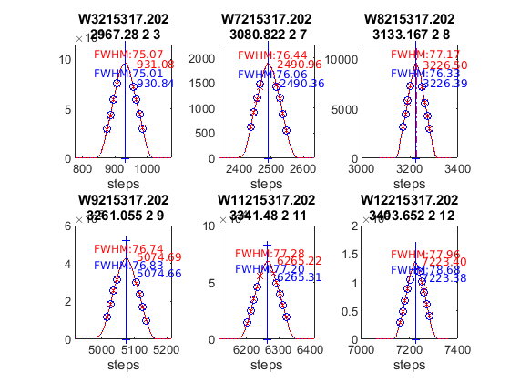
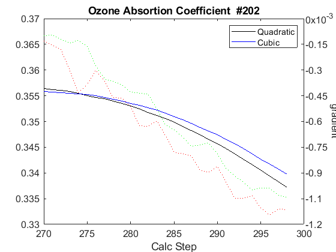
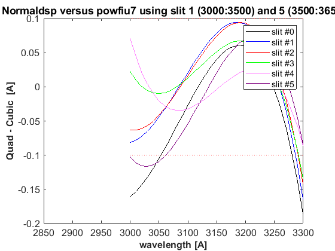
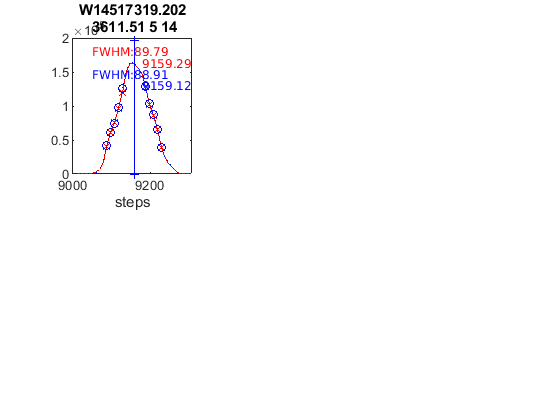
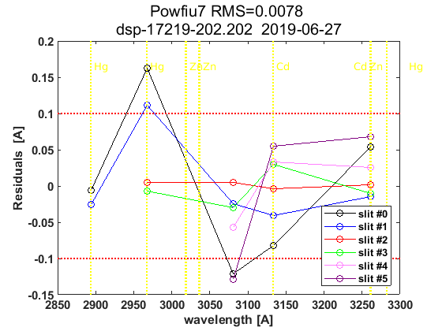
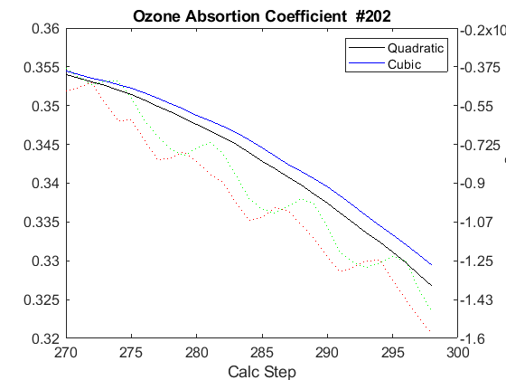
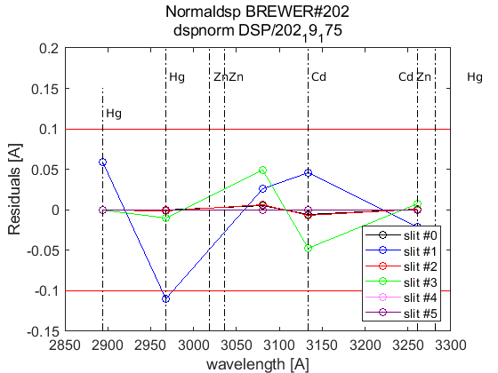

Contents
Brewer Evaluation
clear all;
file_setup='arenos2019_setup';
eval(file_setup);
Cal.n_inst=find(Cal.brw==202);
Cal.file_latex=fullfile('.','latex',Cal.brw_str{Cal.n_inst});
Cal.dir_figs=fullfile('latex',filesep(),Cal.brw_str{Cal.n_inst},...
filesep(),[Cal.brw_str{Cal.n_inst},'_figures'],filesep());
mkdir(Cal.dir_figs);
try
save(Cal.file_save,'-Append','Cal');
catch exception
fprintf('Error: %s\n Initializing data for Brewer %s\n',exception.message,Cal.brw_name{Cal.n_inst});
save(Cal.file_save);
end
ans =
logical
1
ans =
1×1 cell array
{'IZO#185'}
ans =
20×9 cell array
Columns 1 through 5
{'TSK#005'} {[ 5]} {[2]} {[0]} {'005'}
{'IOS#017'} {[ 17]} {[2]} {[0]} {'017'}
{'SCO#033'} {[ 33]} {[2]} {[0]} {'033'}
{'MAD#070'} {[ 70]} {[4]} {[0]} {'070'}
{'UK_#075'} {[ 75]} {[4]} {[0]} {'075'}
{'MUR#117'} {[117]} {[4]} {[0]} {'117'}
{'UK_#126'} {[126]} {[4]} {[0]} {'126'}
{'ARE#150'} {[150]} {[3]} {[0]} {'150'}
{'COR#151'} {[151]} {[4]} {[0]} {'151'}
{'K&Z#158'} {[158]} {[3]} {[0]} {'158'}
{'WRC#163'} {[163]} {[3]} {[0]} {'163'}
{'ZAR#166'} {[166]} {[4]} {[0]} {'166'}
{'UK_#172'} {[172]} {[3]} {[0]} {'172'}
{'JAP#174'} {[174]} {[3]} {[0]} {'174'}
{'IZO#185'} {[185]} {[3]} {[0]} {'185'}
{'MAD#186'} {[186]} {[3]} {[0]} {'186'}
{'CAN#190'} {[190]} {[3]} {[0]} {'190'}
{'TAM#201'} {[201]} {[3]} {[0]} {'201'}
{'DNK#202'} {[202]} {[3]} {[0]} {'202'}
{'DNK#228'} {[228]} {[3]} {[0]} {'228'}
Columns 6 through 9
{'..\005\ICF15117…'} {'..\005\ICF17219…'} {'1838'} {'1838'}
{'..\017\ICF14919…'} {'..\017\ICF14919…'} {'1680'} {'1680'}
{'..\033\ICF15617…'} {'..\033\IOS15617…'} {'2325'} {'2325'}
{'..\070\ICF15617…'} {'..\070\IOS15617…'} {'1685'} {'1685'}
{'..\075\ICF15017…'} {'..\075\ICF15017…'} {'1714'} {'1714'}
{'..\117\ICF15517…'} {'..\117\IOS15517…'} {'1620'} {'1620'}
{'..\126\icf15517…'} {'..\126\ICF17419…'} {'1710'} {'1710'}
{'..\150\ICF15617…'} {'..\150\ICF15617…'} {'0322'} {'0322'}
{'..\151\ICF15317…'} {'..\151\IOS15317…'} {'1880'} {'1880'}
{'..\158\ICF21218…'} {'..\158\ICF21218…'} {'0558'} {'0558'}
{'..\163\ICF21018…'} {'..\163\ICF17519…'} {'0274'} {'0274'}
{'..\166\ICF15217…'} {'..\166\ICF17419…'} {'1955'} {'1955'}
{'..\172\ICF15117…'} {'..\172\ICF15117…'} {'0444'} {'0444'}
{'..\174\ICF20718…'} {'..\174\ICF20718…'} {'0605'} {'0605'}
{'..\185\config18…'} {'..\185\config18…'} {'0365'} {'0367'}
{'..\186\ICF15317…'} {'..\186\IOS15317…'} {'0315'} {'0315'}
{'..\190\ICF11419…'} {'..\190\ICF11419…'} {'0410'} {'0410'}
{'..\201\ICF14315…'} {'..\201\ICF14315…'} {'0320'} {'0320'}
{'..\202\ICF15017…'} {'..\202\ICF15017…'} {'0270'} {'0270'}
{'..\228\ICF15017…'} {'..\228\ICF17419…'} {'0242'} {'0242'}
configuration files
close all
[config_def,TCdef,DTdef,ETCdef,A1def,ATdef]=read_icf(Cal.brw_config_files{Cal.n_inst,2});
[config_orig,TCorig,DTorig,ETCorig,A1orig,ATorig]=read_icf(Cal.brw_config_files{Cal.n_inst,1});
Station.OSC=680;
Station.name='';
Station.lat=67;
Station.long=50;
Station.meanozo=350;
cal_step={}; sc_avg={}; sc_raw={}; Args={};
Sun_scan: Before Campaign
close all
[cal_step{1},sc_avg{1},sc_raw{1},Args{1}]=sc_report(Cal.brw_str{Cal.n_inst},Cal.brw_config_files{Cal.n_inst,1},...
'date_range',datenum(Cal.Date.cal_year,1,[1 159]),...
'CSN_orig',config_orig(14),'OSC',Station.OSC,...
'control_flag',1,'residual_limit',50,'hg_limit',2.5,...
'hg_time',60,'one_flag',0);
202
OK->B11619.202
OK->B11719.202
OK->B11819.202
OK->B11919.202
OK->B12019.202
OK->B12119.202
OK->B12219.202
OK->B12319.202
OK->B12419.202
OK->B12519.202
OK->B12619.202
OK->B12719.202
OK->B12819.202
OK->B12919.202
OK->B13119.202
OK->B13219.202
OK->B13319.202
OK->B13419.202
OK->B13519.202
OK->B13619.202
OK->B13719.202
OK->B13819.202
OK->B13919.202
OK->B14019.202
OK->B14119.202
OK->B14219.202
OK->B14319.202


Sun_scan: Campaign
[cal_step{2},sc_avg{2},sc_raw{2},Args{2}]=sc_report(Cal.brw_str{Cal.n_inst},Cal.brw_config_files{Cal.n_inst,2},...
'date_range',datenum(Cal.Date.cal_year,1,Cal.calibration_days{Cal.n_inst,1}([1 end])),...
'CSN_orig',config_def(14),'OSC',Station.OSC,...
'control_flag',1,'residual_limit',35,...
'hg_time',25,'one_flag',1);
202
OK->B17119.202
OK->B17219.202


ix=sort(findobj('tag','SC_INDIVIDUAL')); figure(ix); set(get(gca,'title'),'FontSize',8);
printfiles_report(ix',Cal.dir_figs,'aux_pattern',ix,'FontSize',.9,'Width',8.5,'Height',7);
ix=sort(findobj('tag','Final_SC_Calculation'));
if length(ix)>1
Width=8; Height=6;
for i=1:length(ix), figure(ix(i)); set(get(gca,'title'),'FontSize',8); end
else
Width=13; Height=8;
end
printfiles_report(ix',Cal.dir_figs,'aux_pattern',ix,'Width',Width,'Height',Height);
close all
naux =
1
naux =
1
figura =
'202_figures_Final_SC_Calculation_1'
naux =
2
Definicion de variables: SC
if length(cal_step)>1
d_p=[length(cal_step)-1 length(cal_step)]; tags={'','new'};
else
d_p=1; tags={'new'};
end
idx=1; cal_step_error={};
for t=d_p
cal_step_error{t}=round(mean([abs(cal_step{t}(2)-cal_step{t}(3)),abs(cal_step{t}(2)-cal_step{t}(4))]));
latexcmd(fullfile(Cal.file_latex,['cal_wavelengthSC',tags{idx},'_',Cal.brw_str{Cal.n_inst}]),...
['\numSC',tags{idx}],size(sc_avg{t},1),...
['\CALCSTEP',tags{idx}],round(cal_step{t}(1)),...
['\calsteperror',tags{idx}],cal_step_error{t});
idx=idx+1;
end
load(Cal.file_save,'sunscan');sunscan{Cal.n_inst}.cal_step=cal_step;
sunscan{Cal.n_inst}.cal_step_error=cal_step_error;
sunscan{Cal.n_inst}.sc_avg=sc_avg; sunscan{Cal.n_inst}.sc_raw=sc_raw;
sunscan{Cal.n_inst}.info=Args;
save(Cal.file_save,'-APPEND','sunscan');
dsp calibration
res={}; detail={}; DSP_QUAD={}; QUAD_SUM={}; QUAD_DETAIL={};
CUBIC_SUM={}; CUBIC_DETAIL={}; salida={}; CSN_icf={};
l=dir(fullfile('DSP',[Cal.brw_str{Cal.n_inst},'*']));
ldsp=cellstr(cat(1,l.name));
ldsp=ldsp(end-3:end)
for jj=1:length(ldsp)
if jj==length(ldsp),confign=2; else confign=1; end
try
[res{jj},detail{jj},DSP_QUAD{jj},QUAD_SUM{jj},QUAD_DETAIL{jj},...
CUBIC_SUM{jj},CUBIC_DETAIL{jj},salida{jj},CSN_icf{jj},...
]=dspreport(Cal,'dsp_dir',fullfile('DSP',ldsp{jj}),'config_n',1);
catch
warning(sprintf('Error en %s. DSP: %s',Cal.brw_name{Cal.n_inst},ldsp{jj}));
res{jj}=NaN*ones(15,9,2); detail{jj}=NaN*ones(7,6,15,2); QUAD_DETAIL{jj}=NaN;
end
datefile =
736848
now:W1015317.202
now:W3015317.202
now:W7015317.202
now:W8015317.202
now:W9015317.202
now:W11015317.202
now:W12015317.202
now:W1115317.202
now:W3115317.202
now:W7115317.202
now:W8115317.202
now:W9115317.202
now:W11115317.202
now:W12115317.202
now:W13115317.202
now:W3215317.202
now:W7215317.202
now:W8215317.202
now:W9215317.202
now:W11215317.202
now:W12215317.202
now:W13215317.202
now:W3315317.202
now:W7315317.202
now:W8315317.202
now:W9315317.202
now:W11315317.202
now:W12315317.202
now:W13315317.202
now:W7415317.202
now:W8415317.202
now:W9415317.202
now:W11415317.202
now:W12415317.202
now:W13415317.202
now:W7515317.202
now:W8515317.202
now:W9515317.202
now:W11515317.202
now:W12515317.202
now:W13515317.202
now:W14515317.202
lines_dsp_15217__202
saving alldsp to DSP/202_17_153/alldsp_15217_202.202
eliminamos la linea slit 6 3403.652000 0.284033
eliminamos la linea slit 5 3403.652000 0.265174
eliminamos la linea slit 4 3403.652000 0.282142
eliminamos la linea slit 3 3403.652000 0.378844
eliminamos la linea slit 2 3499.952000 -0.274409
eliminamos la linea slit 1 3341.480000 -0.349004
eliminamos la linea slit 6 3341.480000 -0.194086
eliminamos la linea slit 5 3341.480000 -0.221950
eliminamos la linea slit 4 3341.480000 -0.263703
eliminamos la linea slit 3 3341.480000 -0.223124
eliminamos la linea slit 2 3403.652000 0.140229
eliminamos la linea slit 1 3261.055000 0.125571
eliminamos la linea slit 2 3341.480000 -0.179225
eliminamos la linea slit 1 2893.600000 0.157291
eliminamos la linea slit 2 2967.280000 -0.210807
saving normaldsp to DSP/202_17_153/dspnorm_15217_202.202 as brewer compatible file
Use polyval(pwl(2,:),wl) for calculating normal wavelengths
Saving ozonecoeffs to DSP/202_17_153/opos15217_202.202
281 WL(A) 3030.91 3061.86 3099.28 3133.88 3166.91 3198.96
Res(A) 11.15 11.11 10.84 11.14 10.95 10.89
O3abs(1/cm) 2.6366 1.8022 1.0102 0.6787 0.3754 0.2991 O3: 0.3534
Daumt O3abs(1/cm) 2.6434 1.7953 1.0029 0.6708 0.3691 0.2982 O3: 0.3625
So2abs(1/cm) 3.7081 5.2084 2.3001 2.0778 1.0355 0.6401
Bremen O3abs(1/cm) 2.6459 1.7996 1.0085 0.6809 0.3741 0.2996 O3: 0.3544
Nicolet 1e4*Rayabs(1/cm) 5057.9 4840.1 4592.5 4377.9 4184.7 4007.6 R: 10.2331
Bates(fix) 1e4*Rayabs(1/cm) 0.0 4870.0 4620.0 4410.0 4220.0 4040.0 R: -1.0000
Bodhaine 1e4*Rayabs(1/cm) 5054.4 4838.1 4592.0 4378.5 4186.3 4009.9 R: 9.8587
I0(mW m^-2nm^-1) 11766.35 9480.12 7544.05 4946.96 4163.90 3293.23 ETC: 1508
Ozone offset due to Rayleigh (RayCOeff/O3Coeff): -2.9 DU
Ozone offset due to Rayleigh (Bodhaine): -3.1 DU
Ratio Ozone for So2(A3)= 1.1827, So2/O3(A2)= 2.4583
O3 factor from Bass & Paur to Daumont = 0.9749
O3 factor from Bass & Paur to Bremen = 0.9971
282 WL(A) 3030.98 3061.93 3099.35 3133.95 3166.98 3199.03
Res(A) 11.15 11.11 10.84 11.14 10.95 10.89
O3abs(1/cm) 2.6336 1.8010 1.0098 0.6787 0.3753 0.2989 O3: 0.3530
Daumt O3abs(1/cm) 2.6405 1.7942 1.0025 0.6709 0.3689 0.2980 O3: 0.3621
So2abs(1/cm) 3.6843 5.2409 2.3049 2.0675 1.0367 0.6384
Bremen O3abs(1/cm) 2.6430 1.7984 1.0081 0.6809 0.3739 0.2994 O3: 0.3540
Nicolet 1e4*Rayabs(1/cm) 5057.3 4839.6 4592.1 4377.4 4184.3 4007.3 R: 10.2305
Bates(fix) 1e4*Rayabs(1/cm) 0.0 4870.0 4620.0 4410.0 4220.0 4040.0 R: -1.0000
Bodhaine 1e4*Rayabs(1/cm) 5053.8 4837.6 4591.6 4378.1 4185.9 4009.5 R: 9.8575
I0(mW m^-2nm^-1) 11760.02 9473.77 7538.39 4944.30 4153.72 3287.71 ETC: 1517
Ozone offset due to Rayleigh (RayCOeff/O3Coeff): -2.9 DU
Ozone offset due to Rayleigh (Bodhaine): -3.1 DU
Ratio Ozone for So2(A3)= 1.1813, So2/O3(A2)= 2.4799
O3 factor from Bass & Paur to Daumont = 0.9747
O3 factor from Bass & Paur to Bremen = 0.9971
283 WL(A) 3031.06 3062.00 3099.42 3134.02 3167.05 3199.09
Res(A) 11.15 11.11 10.84 11.14 10.95 10.89
O3abs(1/cm) 2.6305 1.7997 1.0094 0.6786 0.3752 0.2986 O3: 0.3523
Daumt O3abs(1/cm) 2.6376 1.7930 1.0020 0.6710 0.3688 0.2979 O3: 0.3617
So2abs(1/cm) 3.6604 5.2722 2.3099 2.0568 1.0380 0.6368
Bremen O3abs(1/cm) 2.6402 1.7971 1.0076 0.6810 0.3738 0.2992 O3: 0.3535
Nicolet 1e4*Rayabs(1/cm) 5056.8 4839.1 4591.6 4377.0 4183.9 4006.9 R: 10.2278
Bates(fix) 1e4*Rayabs(1/cm) 0.0 4870.0 4620.0 4410.0 4220.0 4040.0 R: -1.0000
Bodhaine 1e4*Rayabs(1/cm) 5053.3 4837.1 4591.1 4377.6 4185.5 4009.2 R: 9.8512
I0(mW m^-2nm^-1) 11753.69 9467.43 7532.91 4941.63 4143.56 3282.19 ETC: 1526
Ozone offset due to Rayleigh (RayCOeff/O3Coeff): -2.9 DU
Ozone offset due to Rayleigh (Bodhaine): -3.1 DU
Ratio Ozone for So2(A3)= 1.1795, So2/O3(A2)= 2.5014
O3 factor from Bass & Paur to Daumont = 0.9742
O3 factor from Bass & Paur to Bremen = 0.9967
284 WL(A) 3031.13 3062.07 3099.49 3134.09 3167.12 3199.16
Res(A) 11.15 11.11 10.84 11.14 10.95 10.89
O3abs(1/cm) 2.6276 1.7984 1.0091 0.6786 0.3751 0.2983 O3: 0.3517
Daumt O3abs(1/cm) 2.6347 1.7918 1.0016 0.6711 0.3686 0.2977 O3: 0.3612
So2abs(1/cm) 3.6383 5.3024 2.3149 2.0461 1.0392 0.6351
Bremen O3abs(1/cm) 2.6375 1.7959 1.0072 0.6811 0.3737 0.2990 O3: 0.3530
Nicolet 1e4*Rayabs(1/cm) 5056.3 4838.6 4591.2 4376.6 4183.5 4006.5 R: 10.2252
Bates(fix) 1e4*Rayabs(1/cm) 0.0 4870.0 4620.0 4410.0 4220.0 4040.0 R: -1.0000
Bodhaine 1e4*Rayabs(1/cm) 5052.8 4836.6 4590.7 4377.2 4185.1 4008.8 R: 9.8488
I0(mW m^-2nm^-1) 11747.37 9461.10 7527.31 4938.97 4133.42 3276.67 ETC: 1535
Ozone offset due to Rayleigh (RayCOeff/O3Coeff): -2.9 DU
Ozone offset due to Rayleigh (Bodhaine): -3.1 DU
Ratio Ozone for So2(A3)= 1.1776, So2/O3(A2)= 2.5222
O3 factor from Bass & Paur to Daumont = 0.9739
O3 factor from Bass & Paur to Bremen = 0.9965
285 WL(A) 3031.20 3062.14 3099.56 3134.16 3167.19 3199.23
Res(A) 11.15 11.11 10.84 11.14 10.95 10.89
O3abs(1/cm) 2.6248 1.7971 1.0088 0.6785 0.3750 0.2980 O3: 0.3511
Daumt O3abs(1/cm) 2.6319 1.7907 1.0012 0.6712 0.3685 0.2975 O3: 0.3607
So2abs(1/cm) 3.6168 5.3326 2.3199 2.0355 1.0404 0.6333
Bremen O3abs(1/cm) 2.6347 1.7946 1.0068 0.6811 0.3736 0.2988 O3: 0.3524
Nicolet 1e4*Rayabs(1/cm) 5055.8 4838.1 4590.7 4376.2 4183.1 4006.2 R: 10.2226
Bates(fix) 1e4*Rayabs(1/cm) 0.0 4870.0 4620.0 4410.0 4220.0 4040.0 R: -1.0000
Bodhaine 1e4*Rayabs(1/cm) 5052.3 4836.1 4590.2 4376.8 4184.7 4008.4 R: 9.8498
I0(mW m^-2nm^-1) 11741.06 9454.78 7521.57 4936.31 4123.31 3271.17 ETC: 1543
Ozone offset due to Rayleigh (RayCOeff/O3Coeff): -2.9 DU
Ozone offset due to Rayleigh (Bodhaine): -3.1 DU
Ratio Ozone for So2(A3)= 1.1757, So2/O3(A2)= 2.5427
O3 factor from Bass & Paur to Daumont = 0.9736
O3 factor from Bass & Paur to Bremen = 0.9964
286 WL(A) 3031.27 3062.22 3099.63 3134.23 3167.26 3199.30
Res(A) 11.15 11.11 10.84 11.14 10.95 10.89
O3abs(1/cm) 2.6221 1.7959 1.0085 0.6785 0.3750 0.2977 O3: 0.3504
Daumt O3abs(1/cm) 2.6291 1.7894 1.0008 0.6713 0.3684 0.2973 O3: 0.3601
So2abs(1/cm) 3.5953 5.3628 2.3255 2.0249 1.0417 0.6315
Bremen O3abs(1/cm) 2.6320 1.7933 1.0064 0.6811 0.3735 0.2986 O3: 0.3518
Nicolet 1e4*Rayabs(1/cm) 5055.2 4837.7 4590.3 4375.7 4182.7 4005.8 R: 10.2200
Bates(fix) 1e4*Rayabs(1/cm) 0.0 4870.0 4620.0 4410.0 4220.0 4040.0 R: -1.0000
Bodhaine 1e4*Rayabs(1/cm) 5051.7 4835.6 4589.8 4376.4 4184.3 4008.1 R: 9.8451
I0(mW m^-2nm^-1) 11734.75 9448.46 7500.06 4933.64 4113.22 3265.81 ETC: 1536
Ozone offset due to Rayleigh (RayCOeff/O3Coeff): -2.9 DU
Ozone offset due to Rayleigh (Bodhaine): -3.1 DU
Ratio Ozone for So2(A3)= 1.1736, So2/O3(A2)= 2.5635
O3 factor from Bass & Paur to Daumont = 0.9732
O3 factor from Bass & Paur to Bremen = 0.9961
287 WL(A) 3031.35 3062.29 3099.71 3134.30 3167.33 3199.37
Res(A) 11.15 11.11 10.84 11.14 10.95 10.89
O3abs(1/cm) 2.6194 1.7946 1.0082 0.6784 0.3749 0.2973 O3: 0.3496
Daumt O3abs(1/cm) 2.6263 1.7882 1.0004 0.6713 0.3683 0.2971 O3: 0.3595
So2abs(1/cm) 3.5739 5.3920 2.3312 2.0137 1.0429 0.6297
Bremen O3abs(1/cm) 2.6293 1.7920 1.0060 0.6811 0.3734 0.2983 O3: 0.3511
Nicolet 1e4*Rayabs(1/cm) 5054.7 4837.2 4589.8 4375.3 4182.3 4005.4 R: 10.2174
Bates(fix) 1e4*Rayabs(1/cm) 0.0 4870.0 4620.0 4410.0 4220.0 4040.0 R: -1.0000
Bodhaine 1e4*Rayabs(1/cm) 5051.2 4835.1 4589.3 4376.0 4183.9 4007.7 R: 9.8404
I0(mW m^-2nm^-1) 11728.46 9442.16 7474.37 4931.19 4103.16 3261.33 ETC: 1526
Ozone offset due to Rayleigh (RayCOeff/O3Coeff): -2.9 DU
Ozone offset due to Rayleigh (Bodhaine): -3.1 DU
Ratio Ozone for So2(A3)= 1.1714, So2/O3(A2)= 2.5838
O3 factor from Bass & Paur to Daumont = 0.9726
O3 factor from Bass & Paur to Bremen = 0.9957
288 WL(A) 3031.42 3062.36 3099.78 3134.37 3167.40 3199.44
Res(A) 11.15 11.11 10.84 11.14 10.95 10.89
O3abs(1/cm) 2.6167 1.7932 1.0078 0.6783 0.3749 0.2970 O3: 0.3488
Daumt O3abs(1/cm) 2.6236 1.7870 1.0000 0.6713 0.3682 0.2968 O3: 0.3589
So2abs(1/cm) 3.5538 5.4197 2.3370 2.0026 1.0442 0.6277
Bremen O3abs(1/cm) 2.6266 1.7906 1.0056 0.6811 0.3733 0.2981 O3: 0.3505
Nicolet 1e4*Rayabs(1/cm) 5054.2 4836.7 4589.4 4374.9 4181.9 4005.1 R: 10.2147
Bates(fix) 1e4*Rayabs(1/cm) 0.0 4870.0 4620.0 4410.0 4220.0 4040.0 R: -1.0000
Bodhaine 1e4*Rayabs(1/cm) 5050.7 4834.7 4588.8 4375.5 4183.5 4007.3 R: 9.8417
I0(mW m^-2nm^-1) 11722.18 9435.86 7448.83 4929.05 4093.11 3256.74 ETC: 1516
Ozone offset due to Rayleigh (RayCOeff/O3Coeff): -2.9 DU
Ozone offset due to Rayleigh (Bodhaine): -3.1 DU
Ratio Ozone for So2(A3)= 1.1691, So2/O3(A2)= 2.6026
O3 factor from Bass & Paur to Daumont = 0.9721
O3 factor from Bass & Paur to Bremen = 0.9954
289 WL(A) 3031.49 3062.43 3099.85 3134.44 3167.47 3199.51
Res(A) 11.15 11.11 10.84 11.14 10.95 10.89
O3abs(1/cm) 2.6139 1.7919 1.0075 0.6782 0.3748 0.2967 O3: 0.3481
Daumt O3abs(1/cm) 2.6208 1.7857 0.9996 0.6713 0.3682 0.2966 O3: 0.3582
So2abs(1/cm) 3.5348 5.4473 2.3429 1.9916 1.0454 0.6258
Bremen O3abs(1/cm) 2.6240 1.7893 1.0052 0.6811 0.3733 0.2978 O3: 0.3497
Nicolet 1e4*Rayabs(1/cm) 5053.7 4836.2 4588.9 4374.5 4181.6 4004.7 R: 10.2121
Bates(fix) 1e4*Rayabs(1/cm) 0.0 4870.0 4620.0 4410.0 4220.0 4040.0 R: -1.0000
Bodhaine 1e4*Rayabs(1/cm) 5050.2 4834.2 4588.4 4375.1 4183.1 4007.0 R: 9.8398
I0(mW m^-2nm^-1) 11715.90 9429.58 7423.44 4926.57 4083.09 3252.04 ETC: 1506
Ozone offset due to Rayleigh (RayCOeff/O3Coeff): -2.9 DU
Ozone offset due to Rayleigh (Bodhaine): -3.1 DU
Ratio Ozone for So2(A3)= 1.1669, So2/O3(A2)= 2.6215
O3 factor from Bass & Paur to Daumont = 0.9718
O3 factor from Bass & Paur to Bremen = 0.9952
290 WL(A) 3031.56 3062.51 3099.92 3134.51 3167.54 3199.58
Res(A) 11.15 11.11 10.84 11.14 10.95 10.89
O3abs(1/cm) 2.6110 1.7904 1.0072 0.6780 0.3748 0.2963 O3: 0.3472
Daumt O3abs(1/cm) 2.6181 1.7844 0.9993 0.6713 0.3681 0.2963 O3: 0.3574
So2abs(1/cm) 3.5157 5.4749 2.3491 1.9806 1.0467 0.6238
Bremen O3abs(1/cm) 2.6214 1.7879 1.0049 0.6810 0.3732 0.2975 O3: 0.3490
Nicolet 1e4*Rayabs(1/cm) 5053.1 4835.7 4588.4 4374.0 4181.2 4004.3 R: 10.2095
Bates(fix) 1e4*Rayabs(1/cm) 0.0 4870.0 4620.0 4410.0 4220.0 4040.0 R: -1.0000
Bodhaine 1e4*Rayabs(1/cm) 5049.7 4833.7 4587.9 4374.7 4182.7 4006.6 R: 9.8326
I0(mW m^-2nm^-1) 11709.64 9423.30 7398.20 4922.70 4073.09 3245.73 ETC: 1494
Ozone offset due to Rayleigh (RayCOeff/O3Coeff): -2.9 DU
Ozone offset due to Rayleigh (Bodhaine): -3.1 DU
Ratio Ozone for So2(A3)= 1.1642, So2/O3(A2)= 2.6414
O3 factor from Bass & Paur to Daumont = 0.9714
O3 factor from Bass & Paur to Bremen = 0.9950
291 WL(A) 3031.64 3062.58 3099.99 3134.58 3167.61 3199.65
Res(A) 11.15 11.11 10.84 11.14 10.95 10.89
O3abs(1/cm) 2.6084 1.7889 1.0070 0.6779 0.3748 0.2959 O3: 0.3464
Daumt O3abs(1/cm) 2.6155 1.7831 0.9989 0.6713 0.3681 0.2960 O3: 0.3567
So2abs(1/cm) 3.4966 5.5018 2.3557 1.9691 1.0480 0.6218
Bremen O3abs(1/cm) 2.6188 1.7865 1.0045 0.6809 0.3732 0.2972 O3: 0.3482
Nicolet 1e4*Rayabs(1/cm) 5052.6 4835.2 4588.0 4373.6 4180.8 4003.9 R: 10.2069
Bates(fix) 1e4*Rayabs(1/cm) 0.0 4870.0 4620.0 4410.0 4220.0 4040.0 R: -1.0000
Bodhaine 1e4*Rayabs(1/cm) 5049.1 4833.2 4587.5 4374.3 4182.3 4006.2 R: 9.8318
I0(mW m^-2nm^-1) 11703.38 9417.03 7373.10 4918.83 4063.12 3236.27 ETC: 1476
Ozone offset due to Rayleigh (RayCOeff/O3Coeff): -2.9 DU
Ozone offset due to Rayleigh (Bodhaine): -3.1 DU
Ratio Ozone for So2(A3)= 1.1614, So2/O3(A2)= 2.6608
O3 factor from Bass & Paur to Daumont = 0.9710
O3 factor from Bass & Paur to Bremen = 0.9947
saving powfiu7 to DSP/202_17_153/dsp_15217_202.202
freecoef =
4
freecoef =
9
freecoef =
9
freecoef =
9
freecoef =
9
freecoef =
9
freecoef =
9
freecoef =
9
freecoef =
9
freecoef =
9
saving data to file:DSP/202_17_153/dsp_15217_202.202
Use brstps2 to calculate steps and wavelengths
Saving ozonecoeffs to DSP/202_17_153/opos_pow7_15217_202.202
281 WL(A) 3030.89 3062.02 3099.45 3134.00 3166.98 3198.97
Res(A) 11.19 11.11 10.85 11.14 10.94 10.87
O3abs(1/cm) 2.6375 1.7993 1.0093 0.6787 0.3753 0.2991 O3: 0.3528
Daumt O3abs(1/cm) 2.6443 1.7926 1.0019 0.6710 0.3689 0.2982 O3: 0.3617
So2abs(1/cm) 3.7159 5.2820 2.3123 2.0601 1.0368 0.6398
Bremen O3abs(1/cm) 2.6467 1.7967 1.0075 0.6810 0.3739 0.2996 O3: 0.3537
Nicolet 1e4*Rayabs(1/cm) 5058.0 4839.0 4591.4 4377.1 4184.3 4007.6 R: 10.2372
Bates(fix) 1e4*Rayabs(1/cm) 0.0 4870.0 4620.0 4410.0 4220.0 4040.0 R: -1.0000
Bodhaine 1e4*Rayabs(1/cm) 5054.5 4836.9 4590.9 4377.8 4185.9 4009.8 R: 9.8665
I0(mW m^-2nm^-1) 11767.14 9465.37 7530.55 4942.43 4153.49 3291.67 ETC: 1517
Ozone offset due to Rayleigh (RayCOeff/O3Coeff): -2.9 DU
Ozone offset due to Rayleigh (Bodhaine): -3.1 DU
Ratio Ozone for So2(A3)= 1.1803, So2/O3(A2)= 2.5206
O3 factor from Bass & Paur to Daumont = 0.9754
O3 factor from Bass & Paur to Bremen = 0.9977
282 WL(A) 3030.97 3062.10 3099.52 3134.07 3167.05 3199.04
Res(A) 11.19 11.11 10.85 11.14 10.94 10.87
O3abs(1/cm) 2.6344 1.7980 1.0090 0.6786 0.3752 0.2989 O3: 0.3524
Daumt O3abs(1/cm) 2.6413 1.7915 1.0014 0.6711 0.3687 0.2980 O3: 0.3613
So2abs(1/cm) 3.6922 5.3122 2.3173 2.0495 1.0380 0.6382
Bremen O3abs(1/cm) 2.6438 1.7955 1.0070 0.6811 0.3738 0.2994 O3: 0.3532
Nicolet 1e4*Rayabs(1/cm) 5057.5 4838.5 4591.0 4376.7 4183.9 4007.2 R: 10.2348
Bates(fix) 1e4*Rayabs(1/cm) 0.0 4870.0 4620.0 4410.0 4220.0 4040.0 R: -1.0000
Bodhaine 1e4*Rayabs(1/cm) 5054.0 4836.5 4590.4 4377.3 4185.5 4009.5 R: 9.8595
I0(mW m^-2nm^-1) 11760.82 9459.05 7524.88 4939.77 4143.32 3286.13 ETC: 1526
Ozone offset due to Rayleigh (RayCOeff/O3Coeff): -2.9 DU
Ozone offset due to Rayleigh (Bodhaine): -3.1 DU
Ratio Ozone for So2(A3)= 1.1786, So2/O3(A2)= 2.5410
O3 factor from Bass & Paur to Daumont = 0.9752
O3 factor from Bass & Paur to Bremen = 0.9977
283 WL(A) 3031.04 3062.17 3099.60 3134.14 3167.12 3199.11
Res(A) 11.19 11.11 10.85 11.14 10.94 10.87
O3abs(1/cm) 2.6314 1.7967 1.0087 0.6786 0.3751 0.2986 O3: 0.3518
Daumt O3abs(1/cm) 2.6384 1.7903 1.0010 0.6712 0.3686 0.2979 O3: 0.3609
So2abs(1/cm) 3.6684 5.3424 2.3225 2.0388 1.0392 0.6365
Bremen O3abs(1/cm) 2.6410 1.7942 1.0066 0.6811 0.3736 0.2992 O3: 0.3527
Nicolet 1e4*Rayabs(1/cm) 5056.9 4838.0 4590.5 4376.3 4183.5 4006.8 R: 10.2323
Bates(fix) 1e4*Rayabs(1/cm) 0.0 4870.0 4620.0 4410.0 4220.0 4040.0 R: -1.0000
Bodhaine 1e4*Rayabs(1/cm) 5053.4 4836.0 4590.0 4376.9 4185.1 4009.1 R: 9.8554
I0(mW m^-2nm^-1) 11754.50 9452.73 7513.34 4937.10 4133.18 3280.61 ETC: 1529
Ozone offset due to Rayleigh (RayCOeff/O3Coeff): -2.9 DU
Ozone offset due to Rayleigh (Bodhaine): -3.1 DU
Ratio Ozone for So2(A3)= 1.1768, So2/O3(A2)= 2.5615
O3 factor from Bass & Paur to Daumont = 0.9749
O3 factor from Bass & Paur to Bremen = 0.9975
284 WL(A) 3031.11 3062.24 3099.67 3134.21 3167.19 3199.18
Res(A) 11.19 11.11 10.85 11.14 10.94 10.87
O3abs(1/cm) 2.6283 1.7954 1.0084 0.6785 0.3750 0.2983 O3: 0.3512
Daumt O3abs(1/cm) 2.6355 1.7890 1.0006 0.6713 0.3685 0.2977 O3: 0.3604
So2abs(1/cm) 3.6452 5.3727 2.3282 2.0282 1.0405 0.6348
Bremen O3abs(1/cm) 2.6382 1.7929 1.0062 0.6811 0.3735 0.2990 O3: 0.3522
Nicolet 1e4*Rayabs(1/cm) 5056.4 4837.5 4590.1 4375.9 4183.1 4006.5 R: 10.2299
Bates(fix) 1e4*Rayabs(1/cm) 0.0 4870.0 4620.0 4410.0 4220.0 4040.0 R: -1.0000
Bodhaine 1e4*Rayabs(1/cm) 5052.9 4835.5 4589.5 4376.5 4184.7 4008.7 R: 9.8587
I0(mW m^-2nm^-1) 11748.20 9446.42 7487.61 4934.44 4123.06 3275.09 ETC: 1517
Ozone offset due to Rayleigh (RayCOeff/O3Coeff): -2.9 DU
Ozone offset due to Rayleigh (Bodhaine): -3.1 DU
Ratio Ozone for So2(A3)= 1.1750, So2/O3(A2)= 2.5823
O3 factor from Bass & Paur to Daumont = 0.9744
O3 factor from Bass & Paur to Bremen = 0.9971
285 WL(A) 3031.18 3062.31 3099.74 3134.28 3167.26 3199.25
Res(A) 11.19 11.11 10.85 11.14 10.94 10.87
O3abs(1/cm) 2.6256 1.7941 1.0080 0.6784 0.3749 0.2980 O3: 0.3505
Daumt O3abs(1/cm) 2.6327 1.7878 1.0002 0.6713 0.3684 0.2975 O3: 0.3599
So2abs(1/cm) 3.6238 5.4010 2.3340 2.0171 1.0417 0.6330
Bremen O3abs(1/cm) 2.6355 1.7916 1.0058 0.6811 0.3734 0.2988 O3: 0.3516
Nicolet 1e4*Rayabs(1/cm) 5055.9 4837.0 4589.6 4375.4 4182.7 4006.1 R: 10.2275
Bates(fix) 1e4*Rayabs(1/cm) 0.0 4870.0 4620.0 4410.0 4220.0 4040.0 R: -1.0000
Bodhaine 1e4*Rayabs(1/cm) 5052.4 4835.0 4589.1 4376.1 4184.3 4008.4 R: 9.8550
I0(mW m^-2nm^-1) 11741.91 9440.12 7462.02 4931.82 4112.97 3269.57 ETC: 1506
Ozone offset due to Rayleigh (RayCOeff/O3Coeff): -2.9 DU
Ozone offset due to Rayleigh (Bodhaine): -3.1 DU
Ratio Ozone for So2(A3)= 1.1729, So2/O3(A2)= 2.6016
O3 factor from Bass & Paur to Daumont = 0.9739
O3 factor from Bass & Paur to Bremen = 0.9968
286 WL(A) 3031.26 3062.38 3099.81 3134.35 3167.33 3199.32
Res(A) 11.19 11.11 10.85 11.14 10.94 10.87
O3abs(1/cm) 2.6229 1.7928 1.0077 0.6784 0.3749 0.2977 O3: 0.3498
Daumt O3abs(1/cm) 2.6299 1.7866 0.9998 0.6713 0.3683 0.2973 O3: 0.3593
So2abs(1/cm) 3.6024 5.4286 2.3398 2.0061 1.0430 0.6312
Bremen O3abs(1/cm) 2.6327 1.7902 1.0054 0.6811 0.3734 0.2986 O3: 0.3510
Nicolet 1e4*Rayabs(1/cm) 5055.4 4836.5 4589.1 4375.0 4182.3 4005.7 R: 10.2250
Bates(fix) 1e4*Rayabs(1/cm) 0.0 4870.0 4620.0 4410.0 4220.0 4040.0 R: -1.0000
Bodhaine 1e4*Rayabs(1/cm) 5051.9 4834.5 4588.6 4375.7 4183.9 4008.0 R: 9.8479
I0(mW m^-2nm^-1) 11735.62 9433.82 7436.58 4929.69 4102.89 3264.40 ETC: 1495
Ozone offset due to Rayleigh (RayCOeff/O3Coeff): -2.9 DU
Ozone offset due to Rayleigh (Bodhaine): -3.1 DU
Ratio Ozone for So2(A3)= 1.1707, So2/O3(A2)= 2.6208
O3 factor from Bass & Paur to Daumont = 0.9734
O3 factor from Bass & Paur to Bremen = 0.9964
287 WL(A) 3031.33 3062.46 3099.88 3134.42 3167.40 3199.38
Res(A) 11.19 11.11 10.85 11.14 10.94 10.87
O3abs(1/cm) 2.6202 1.7914 1.0074 0.6783 0.3749 0.2973 O3: 0.3490
Daumt O3abs(1/cm) 2.6271 1.7853 0.9995 0.6714 0.3682 0.2970 O3: 0.3587
So2abs(1/cm) 3.5810 5.4563 2.3457 1.9951 1.0442 0.6294
Bremen O3abs(1/cm) 2.6300 1.7889 1.0051 0.6811 0.3733 0.2983 O3: 0.3504
Nicolet 1e4*Rayabs(1/cm) 5054.8 4836.0 4588.7 4374.6 4181.9 4005.3 R: 10.2226
Bates(fix) 1e4*Rayabs(1/cm) 0.0 4870.0 4620.0 4410.0 4220.0 4040.0 R: -1.0000
Bodhaine 1e4*Rayabs(1/cm) 5051.3 4834.0 4588.2 4375.2 4183.5 4007.6 R: 9.8502
I0(mW m^-2nm^-1) 11729.34 9427.54 7411.28 4927.51 4092.85 3259.89 ETC: 1485
Ozone offset due to Rayleigh (RayCOeff/O3Coeff): -2.9 DU
Ozone offset due to Rayleigh (Bodhaine): -3.1 DU
Ratio Ozone for So2(A3)= 1.1684, So2/O3(A2)= 2.6400
O3 factor from Bass & Paur to Daumont = 0.9728
O3 factor from Bass & Paur to Bremen = 0.9960
288 WL(A) 3031.40 3062.53 3099.95 3134.49 3167.47 3199.45
Res(A) 11.19 11.11 10.85 11.13 10.94 10.87
O3abs(1/cm) 2.6175 1.7899 1.0071 0.6781 0.3748 0.2970 O3: 0.3483
Daumt O3abs(1/cm) 2.6243 1.7840 0.9991 0.6713 0.3681 0.2968 O3: 0.3581
So2abs(1/cm) 3.5599 5.4839 2.3523 1.9840 1.0455 0.6274
Bremen O3abs(1/cm) 2.6273 1.7875 1.0047 0.6810 0.3733 0.2980 O3: 0.3497
Nicolet 1e4*Rayabs(1/cm) 5054.3 4835.5 4588.2 4374.2 4181.5 4005.0 R: 10.2201
Bates(fix) 1e4*Rayabs(1/cm) 0.0 4870.0 4620.0 4410.0 4220.0 4040.0 R: -1.0000
Bodhaine 1e4*Rayabs(1/cm) 5050.8 4833.5 4587.7 4374.8 4183.1 4007.3 R: 9.8504
I0(mW m^-2nm^-1) 11723.08 9421.26 7386.13 4923.90 4082.82 3255.26 ETC: 1476
Ozone offset due to Rayleigh (RayCOeff/O3Coeff): -2.9 DU
Ozone offset due to Rayleigh (Bodhaine): -3.1 DU
Ratio Ozone for So2(A3)= 1.1659, So2/O3(A2)= 2.6594
O3 factor from Bass & Paur to Daumont = 0.9725
O3 factor from Bass & Paur to Bremen = 0.9958
289 WL(A) 3031.48 3062.60 3100.02 3134.56 3167.54 3199.52
Res(A) 11.19 11.11 10.85 11.13 10.94 10.87
O3abs(1/cm) 2.6146 1.7884 1.0068 0.6779 0.3748 0.2966 O3: 0.3475
Daumt O3abs(1/cm) 2.6215 1.7827 0.9987 0.6713 0.3681 0.2965 O3: 0.3574
So2abs(1/cm) 3.5409 5.5098 2.3588 1.9727 1.0467 0.6255
Bremen O3abs(1/cm) 2.6247 1.7861 1.0043 0.6809 0.3732 0.2978 O3: 0.3490
Nicolet 1e4*Rayabs(1/cm) 5053.8 4835.0 4587.8 4373.7 4181.1 4004.6 R: 10.2177
Bates(fix) 1e4*Rayabs(1/cm) 0.0 4870.0 4620.0 4410.0 4220.0 4040.0 R: -1.0000
Bodhaine 1e4*Rayabs(1/cm) 5050.3 4833.0 4587.3 4374.4 4182.7 4006.9 R: 9.8413
I0(mW m^-2nm^-1) 11716.82 9415.00 7361.13 4920.03 4072.81 3250.53 ETC: 1467
Ozone offset due to Rayleigh (RayCOeff/O3Coeff): -2.9 DU
Ozone offset due to Rayleigh (Bodhaine): -3.1 DU
Ratio Ozone for So2(A3)= 1.1633, So2/O3(A2)= 2.6777
O3 factor from Bass & Paur to Daumont = 0.9723
O3 factor from Bass & Paur to Bremen = 0.9958
290 WL(A) 3031.55 3062.67 3100.09 3134.63 3167.61 3199.59
Res(A) 11.19 11.11 10.85 11.13 10.94 10.87
O3abs(1/cm) 2.6118 1.7870 1.0066 0.6777 0.3748 0.2963 O3: 0.3467
Daumt O3abs(1/cm) 2.6188 1.7814 0.9984 0.6713 0.3681 0.2963 O3: 0.3567
So2abs(1/cm) 3.5219 5.5345 2.3655 1.9614 1.0480 0.6235
Bremen O3abs(1/cm) 2.6221 1.7847 1.0040 0.6809 0.3732 0.2975 O3: 0.3482
Nicolet 1e4*Rayabs(1/cm) 5053.3 4834.5 4587.3 4373.3 4180.8 4004.2 R: 10.2153
Bates(fix) 1e4*Rayabs(1/cm) 0.0 4870.0 4620.0 4410.0 4220.0 4040.0 R: -1.0000
Bodhaine 1e4*Rayabs(1/cm) 5049.8 4832.5 4586.8 4374.0 4182.3 4006.5 R: 9.8407
I0(mW m^-2nm^-1) 11710.57 9408.74 7336.27 4916.17 4062.83 3243.95 ETC: 1455
Ozone offset due to Rayleigh (RayCOeff/O3Coeff): -2.9 DU
Ozone offset due to Rayleigh (Bodhaine): -3.1 DU
Ratio Ozone for So2(A3)= 1.1607, So2/O3(A2)= 2.6951
O3 factor from Bass & Paur to Daumont = 0.9720
O3 factor from Bass & Paur to Bremen = 0.9957
291 WL(A) 3031.62 3062.75 3100.17 3134.70 3167.68 3199.66
Res(A) 11.19 11.11 10.85 11.13 10.94 10.87
O3abs(1/cm) 2.6090 1.7856 1.0063 0.6775 0.3748 0.2958 O3: 0.3458
Daumt O3abs(1/cm) 2.6161 1.7801 0.9980 0.6712 0.3680 0.2960 O3: 0.3559
So2abs(1/cm) 3.5029 5.5592 2.3722 1.9501 1.0492 0.6215
Bremen O3abs(1/cm) 2.6195 1.7832 1.0036 0.6807 0.3732 0.2972 O3: 0.3474
Nicolet 1e4*Rayabs(1/cm) 5052.7 4834.0 4586.9 4372.9 4180.4 4003.9 R: 10.2128
Bates(fix) 1e4*Rayabs(1/cm) 0.0 4870.0 4620.0 4410.0 4220.0 4040.0 R: -1.0000
Bodhaine 1e4*Rayabs(1/cm) 5049.3 4832.0 4586.4 4373.6 4181.9 4006.2 R: 9.8438
I0(mW m^-2nm^-1) 11704.33 9402.49 7311.54 4912.30 4052.87 3234.47 ETC: 1438
Ozone offset due to Rayleigh (RayCOeff/O3Coeff): -3.0 DU
Ozone offset due to Rayleigh (Bodhaine): -3.1 DU
Ratio Ozone for So2(A3)= 1.1580, So2/O3(A2)= 2.7126
O3 factor from Bass & Paur to Daumont = 0.9715
O3 factor from Bass & Paur to Bremen = 0.9953





datefile =
736852
now:W1015717.202
now:W3015717.202
now:W7015717.202
now:W8015717.202
now:W9015717.202
now:W11015717.202
now:W12015717.202
now:W1115717.202
now:W3115717.202
now:W7115717.202
now:W8115717.202
now:W9115717.202
now:W11115717.202
now:W12115717.202
now:W13115717.202
now:W3215717.202
now:W7215717.202
now:W8215717.202
now:W9215717.202
now:W11215717.202
now:W12215717.202
now:W13215717.202
now:W3315717.202
now:W7315717.202
now:W8315717.202
now:W9315717.202
now:W11315717.202
now:W12315717.202
now:W13315717.202
now:W7415717.202
now:W8415717.202
now:W9415717.202
now:W11415717.202
now:W12415717.202
now:W13415717.202
now:W7515717.202
now:W8515717.202
now:W9515717.202
now:W11515717.202
now:W12515717.202
now:W13515717.202
now:W14515717.202
lines_dsp_15617__202
saving alldsp to DSP/202_17_157/alldsp_15617_202.202
eliminamos la linea slit 3 3403.652000 0.298978
eliminamos la linea slit 2 3499.952000 -0.393281
eliminamos la linea slit 6 3403.652000 0.159554
eliminamos la linea slit 5 3403.652000 0.139288
eliminamos la linea slit 4 3499.952000 -0.156046
eliminamos la linea slit 3 3341.480000 0.162704
eliminamos la linea slit 2 3261.055000 0.162654
eliminamos la linea slit 1 3261.055000 0.170226
eliminamos la linea slit 4 3261.055000 0.149477
eliminamos la linea slit 3 3261.055000 0.220430
eliminamos la linea slit 1 2967.280000 -0.158352
saving normaldsp to DSP/202_17_157/dspnorm_15617_202.202 as brewer compatible file
Use polyval(pwl(2,:),wl) for calculating normal wavelengths
Saving ozonecoeffs to DSP/202_17_157/opos15617_202.202
281 WL(A) 3031.03 3062.22 3099.81 3134.45 3167.38 3199.40
Res(A) 11.21 11.09 10.92 11.17 10.97 10.81
O3abs(1/cm) 2.6319 1.7958 1.0077 0.6781 0.3749 0.2973 O3: 0.3493
Daumt O3abs(1/cm) 2.6389 1.7894 0.9999 0.6713 0.3683 0.2971 O3: 0.3591
So2abs(1/cm) 3.6730 5.3670 2.3408 1.9900 1.0437 0.6293
Bremen O3abs(1/cm) 2.6415 1.7932 1.0055 0.6810 0.3734 0.2984 O3: 0.3508
Nicolet 1e4*Rayabs(1/cm) 5057.0 4837.6 4589.1 4374.4 4182.1 4005.3 R: 10.3271
Bates(fix) 1e4*Rayabs(1/cm) 0.0 4870.0 4620.0 4410.0 4220.0 4040.0 R: -1.0000
Bodhaine 1e4*Rayabs(1/cm) 5053.5 4835.6 4588.6 4375.1 4183.6 4007.6 R: 9.9548
I0(mW m^-2nm^-1) 11755.20 9447.98 7431.53 4926.10 4096.57 3257.37 ETC: 1494
Ozone offset due to Rayleigh (RayCOeff/O3Coeff): -3.0 DU
Ozone offset due to Rayleigh (Bodhaine): -3.1 DU
Ratio Ozone for So2(A3)= 1.1727, So2/O3(A2)= 2.5556
O3 factor from Bass & Paur to Daumont = 0.9727
O3 factor from Bass & Paur to Bremen = 0.9958
282 WL(A) 3031.10 3062.30 3099.88 3134.52 3167.45 3199.47
Res(A) 11.21 11.09 10.92 11.17 10.97 10.81
O3abs(1/cm) 2.6288 1.7945 1.0074 0.6779 0.3749 0.2970 O3: 0.3486
Daumt O3abs(1/cm) 2.6360 1.7881 0.9995 0.6712 0.3682 0.2969 O3: 0.3585
So2abs(1/cm) 3.6493 5.3958 2.3470 1.9790 1.0450 0.6273
Bremen O3abs(1/cm) 2.6387 1.7919 1.0051 0.6809 0.3733 0.2981 O3: 0.3501
Nicolet 1e4*Rayabs(1/cm) 5056.5 4837.1 4588.7 4374.0 4181.7 4004.9 R: 10.3233
Bates(fix) 1e4*Rayabs(1/cm) 0.0 4870.0 4620.0 4410.0 4220.0 4040.0 R: -1.0000
Bodhaine 1e4*Rayabs(1/cm) 5053.0 4835.1 4588.2 4374.6 4183.2 4007.2 R: 9.9473
I0(mW m^-2nm^-1) 11748.90 9441.64 7406.62 4922.25 4086.57 3252.66 ETC: 1485
Ozone offset due to Rayleigh (RayCOeff/O3Coeff): -3.0 DU
Ozone offset due to Rayleigh (Bodhaine): -3.1 DU
Ratio Ozone for So2(A3)= 1.1704, So2/O3(A2)= 2.5753
O3 factor from Bass & Paur to Daumont = 0.9725
O3 factor from Bass & Paur to Bremen = 0.9958
283 WL(A) 3031.17 3062.37 3099.95 3134.59 3167.51 3199.54
Res(A) 11.21 11.09 10.92 11.17 10.97 10.81
O3abs(1/cm) 2.6260 1.7931 1.0071 0.6777 0.3749 0.2967 O3: 0.3479
Daumt O3abs(1/cm) 2.6332 1.7869 0.9991 0.6712 0.3681 0.2966 O3: 0.3578
So2abs(1/cm) 3.6278 5.4236 2.3535 1.9674 1.0463 0.6254
Bremen O3abs(1/cm) 2.6359 1.7906 1.0047 0.6808 0.3733 0.2978 O3: 0.3494
Nicolet 1e4*Rayabs(1/cm) 5056.0 4836.6 4588.2 4373.6 4181.3 4004.5 R: 10.3196
Bates(fix) 1e4*Rayabs(1/cm) 0.0 4870.0 4620.0 4410.0 4220.0 4040.0 R: -1.0000
Bodhaine 1e4*Rayabs(1/cm) 5052.5 4834.6 4587.7 4374.2 4182.9 4006.8 R: 9.9420
I0(mW m^-2nm^-1) 11742.61 9435.31 7381.84 4918.41 4076.59 3247.83 ETC: 1475
Ozone offset due to Rayleigh (RayCOeff/O3Coeff): -3.0 DU
Ozone offset due to Rayleigh (Bodhaine): -3.1 DU
Ratio Ozone for So2(A3)= 1.1681, So2/O3(A2)= 2.5945
O3 factor from Bass & Paur to Daumont = 0.9721
O3 factor from Bass & Paur to Bremen = 0.9956
284 WL(A) 3031.25 3062.44 3100.02 3134.66 3167.58 3199.60
Res(A) 11.21 11.09 10.91 11.17 10.97 10.81
O3abs(1/cm) 2.6233 1.7918 1.0068 0.6775 0.3749 0.2963 O3: 0.3471
Daumt O3abs(1/cm) 2.6303 1.7856 0.9988 0.6711 0.3681 0.2963 O3: 0.3571
So2abs(1/cm) 3.6064 5.4514 2.3600 1.9561 1.0475 0.6234
Bremen O3abs(1/cm) 2.6332 1.7892 1.0044 0.6807 0.3732 0.2975 O3: 0.3487
Nicolet 1e4*Rayabs(1/cm) 5055.4 4836.1 4587.8 4373.1 4180.9 4004.2 R: 10.3158
Bates(fix) 1e4*Rayabs(1/cm) 0.0 4870.0 4620.0 4410.0 4220.0 4040.0 R: -1.0000
Bodhaine 1e4*Rayabs(1/cm) 5052.0 4834.1 4587.3 4373.8 4182.5 4006.5 R: 9.9438
I0(mW m^-2nm^-1) 11736.32 9428.99 7357.21 4914.57 4066.64 3242.24 ETC: 1465
Ozone offset due to Rayleigh (RayCOeff/O3Coeff): -3.0 DU
Ozone offset due to Rayleigh (Bodhaine): -3.2 DU
Ratio Ozone for So2(A3)= 1.1656, So2/O3(A2)= 2.6140
O3 factor from Bass & Paur to Daumont = 0.9719
O3 factor from Bass & Paur to Bremen = 0.9955
285 WL(A) 3031.32 3062.51 3100.09 3134.73 3167.65 3199.67
Res(A) 11.21 11.09 10.91 11.17 10.97 10.81
O3abs(1/cm) 2.6206 1.7903 1.0065 0.6773 0.3749 0.2959 O3: 0.3462
Daumt O3abs(1/cm) 2.6275 1.7843 0.9984 0.6711 0.3681 0.2960 O3: 0.3564
So2abs(1/cm) 3.5851 5.4792 2.3666 1.9449 1.0488 0.6213
Bremen O3abs(1/cm) 2.6305 1.7878 1.0040 0.6806 0.3732 0.2972 O3: 0.3479
Nicolet 1e4*Rayabs(1/cm) 5054.9 4835.6 4587.3 4372.7 4180.5 4003.8 R: 10.3120
Bates(fix) 1e4*Rayabs(1/cm) 0.0 4870.0 4620.0 4410.0 4220.0 4040.0 R: -1.0000
Bodhaine 1e4*Rayabs(1/cm) 5051.4 4833.6 4586.8 4373.4 4182.1 4006.1 R: 9.9376
I0(mW m^-2nm^-1) 11730.05 9422.68 7332.71 4910.73 4056.70 3232.60 ETC: 1448
Ozone offset due to Rayleigh (RayCOeff/O3Coeff): -3.0 DU
Ozone offset due to Rayleigh (Bodhaine): -3.2 DU
Ratio Ozone for So2(A3)= 1.1627, So2/O3(A2)= 2.6340
O3 factor from Bass & Paur to Daumont = 0.9715
O3 factor from Bass & Paur to Bremen = 0.9952
286 WL(A) 3031.39 3062.58 3100.17 3134.81 3167.72 3199.74
Res(A) 11.21 11.09 10.91 11.17 10.97 10.81
O3abs(1/cm) 2.6179 1.7888 1.0062 0.6771 0.3749 0.2954 O3: 0.3452
Daumt O3abs(1/cm) 2.6248 1.7830 0.9981 0.6709 0.3681 0.2957 O3: 0.3556
So2abs(1/cm) 3.5638 5.5057 2.3734 1.9336 1.0500 0.6192
Bremen O3abs(1/cm) 2.6278 1.7864 1.0036 0.6804 0.3732 0.2969 O3: 0.3470
Nicolet 1e4*Rayabs(1/cm) 5054.4 4835.1 4586.9 4372.3 4180.1 4003.4 R: 10.3082
Bates(fix) 1e4*Rayabs(1/cm) 0.0 4870.0 4620.0 4410.0 4220.0 4040.0 R: -1.0000
Bodhaine 1e4*Rayabs(1/cm) 5050.9 4833.1 4586.4 4372.9 4181.7 4005.7 R: 9.9305
I0(mW m^-2nm^-1) 11723.79 9416.38 7308.35 4906.89 4046.79 3222.97 ETC: 1431
Ozone offset due to Rayleigh (RayCOeff/O3Coeff): -3.0 DU
Ozone offset due to Rayleigh (Bodhaine): -3.2 DU
Ratio Ozone for So2(A3)= 1.1598, So2/O3(A2)= 2.6532
O3 factor from Bass & Paur to Daumont = 0.9709
O3 factor from Bass & Paur to Bremen = 0.9948
287 WL(A) 3031.46 3062.66 3100.24 3134.88 3167.79 3199.81
Res(A) 11.20 11.09 10.91 11.17 10.97 10.81
O3abs(1/cm) 2.6151 1.7874 1.0059 0.6768 0.3749 0.2950 O3: 0.3442
Daumt O3abs(1/cm) 2.6220 1.7817 0.9977 0.6708 0.3681 0.2954 O3: 0.3547
So2abs(1/cm) 3.5445 5.5305 2.3808 1.9218 1.0513 0.6171
Bremen O3abs(1/cm) 2.6251 1.7850 1.0033 0.6802 0.3732 0.2965 O3: 0.3462
Nicolet 1e4*Rayabs(1/cm) 5053.9 4834.6 4586.4 4371.9 4179.7 4003.1 R: 10.3044
Bates(fix) 1e4*Rayabs(1/cm) 0.0 4870.0 4620.0 4410.0 4220.0 4040.0 R: -1.0000
Bodhaine 1e4*Rayabs(1/cm) 5050.4 4832.6 4585.9 4372.5 4181.3 4005.3 R: 9.9317
I0(mW m^-2nm^-1) 11717.53 9410.08 7284.13 4903.06 4036.90 3213.37 ETC: 1414
Ozone offset due to Rayleigh (RayCOeff/O3Coeff): -3.0 DU
Ozone offset due to Rayleigh (Bodhaine): -3.2 DU
Ratio Ozone for So2(A3)= 1.1567, So2/O3(A2)= 2.6714
O3 factor from Bass & Paur to Daumont = 0.9703
O3 factor from Bass & Paur to Bremen = 0.9943
288 WL(A) 3031.54 3062.73 3100.31 3134.95 3167.86 3199.88
Res(A) 11.20 11.09 10.91 11.17 10.97 10.81
O3abs(1/cm) 2.6123 1.7860 1.0056 0.6765 0.3749 0.2945 O3: 0.3432
Daumt O3abs(1/cm) 2.6193 1.7804 0.9974 0.6707 0.3681 0.2950 O3: 0.3538
So2abs(1/cm) 3.5255 5.5554 2.3881 1.9103 1.0525 0.6150
Bremen O3abs(1/cm) 2.6225 1.7836 1.0029 0.6800 0.3733 0.2962 O3: 0.3452
Nicolet 1e4*Rayabs(1/cm) 5053.3 4834.1 4586.0 4371.4 4179.3 4002.7 R: 10.3007
Bates(fix) 1e4*Rayabs(1/cm) 0.0 4870.0 4620.0 4410.0 4220.0 4040.0 R: -1.0000
Bodhaine 1e4*Rayabs(1/cm) 5049.9 4832.2 4585.5 4372.1 4180.9 4005.0 R: 9.9281
I0(mW m^-2nm^-1) 11711.29 9403.80 7260.03 4899.23 4027.04 3203.79 ETC: 1397
Ozone offset due to Rayleigh (RayCOeff/O3Coeff): -3.0 DU
Ozone offset due to Rayleigh (Bodhaine): -3.2 DU
Ratio Ozone for So2(A3)= 1.1537, So2/O3(A2)= 2.6896
O3 factor from Bass & Paur to Daumont = 0.9698
O3 factor from Bass & Paur to Bremen = 0.9940
289 WL(A) 3031.61 3062.80 3100.38 3135.02 3167.93 3199.95
Res(A) 11.20 11.09 10.91 11.17 10.97 10.81
O3abs(1/cm) 2.6094 1.7845 1.0053 0.6761 0.3749 0.2940 O3: 0.3422
Daumt O3abs(1/cm) 2.6166 1.7790 0.9970 0.6705 0.3681 0.2947 O3: 0.3529
So2abs(1/cm) 3.5065 5.5803 2.3954 1.8989 1.0537 0.6128
Bremen O3abs(1/cm) 2.6199 1.7821 1.0026 0.6798 0.3733 0.2958 O3: 0.3443
Nicolet 1e4*Rayabs(1/cm) 5052.8 4833.7 4585.5 4371.0 4178.9 4002.3 R: 10.2969
Bates(fix) 1e4*Rayabs(1/cm) 0.0 4870.0 4620.0 4410.0 4220.0 4040.0 R: -1.0000
Bodhaine 1e4*Rayabs(1/cm) 5049.3 4831.7 4585.0 4371.7 4180.5 4004.6 R: 9.9201
I0(mW m^-2nm^-1) 11705.05 9397.52 7236.07 4895.40 4017.19 3194.23 ETC: 1381
Ozone offset due to Rayleigh (RayCOeff/O3Coeff): -3.0 DU
Ozone offset due to Rayleigh (Bodhaine): -3.2 DU
Ratio Ozone for So2(A3)= 1.1506, So2/O3(A2)= 2.7080
O3 factor from Bass & Paur to Daumont = 0.9696
O3 factor from Bass & Paur to Bremen = 0.9939
290 WL(A) 3031.68 3062.87 3100.45 3135.09 3168.00 3200.02
Res(A) 11.20 11.09 10.91 11.17 10.97 10.81
O3abs(1/cm) 2.6069 1.7830 1.0050 0.6758 0.3750 0.2936 O3: 0.3412
Daumt O3abs(1/cm) 2.6139 1.7777 0.9967 0.6703 0.3681 0.2943 O3: 0.3520
So2abs(1/cm) 3.4877 5.6041 2.4029 1.8874 1.0549 0.6106
Bremen O3abs(1/cm) 2.6173 1.7807 1.0022 0.6796 0.3733 0.2954 O3: 0.3433
Nicolet 1e4*Rayabs(1/cm) 5052.3 4833.2 4585.0 4370.6 4178.5 4001.9 R: 10.2931
Bates(fix) 1e4*Rayabs(1/cm) 0.0 4870.0 4620.0 4410.0 4220.0 4040.0 R: -1.0000
Bodhaine 1e4*Rayabs(1/cm) 5048.8 4831.2 4584.6 4371.3 4180.1 4004.2 R: 9.9183
I0(mW m^-2nm^-1) 11698.82 9391.25 7212.24 4891.58 4007.37 3184.69 ETC: 1364
Ozone offset due to Rayleigh (RayCOeff/O3Coeff): -3.0 DU
Ozone offset due to Rayleigh (Bodhaine): -3.2 DU
Ratio Ozone for So2(A3)= 1.1474, So2/O3(A2)= 2.7255
O3 factor from Bass & Paur to Daumont = 0.9694
O3 factor from Bass & Paur to Bremen = 0.9939
291 WL(A) 3031.76 3062.95 3100.52 3135.16 3168.07 3200.09
Res(A) 11.20 11.09 10.91 11.17 10.97 10.81
O3abs(1/cm) 2.6043 1.7815 1.0048 0.6754 0.3751 0.2931 O3: 0.3402
Daumt O3abs(1/cm) 2.6113 1.7763 0.9963 0.6701 0.3682 0.2939 O3: 0.3510
So2abs(1/cm) 3.4707 5.6258 2.4111 1.8756 1.0561 0.6083
Bremen O3abs(1/cm) 2.6147 1.7792 1.0019 0.6793 0.3734 0.2950 O3: 0.3423
Nicolet 1e4*Rayabs(1/cm) 5051.8 4832.7 4584.6 4370.2 4178.1 4001.6 R: 10.2894
Bates(fix) 1e4*Rayabs(1/cm) 0.0 4870.0 4620.0 4410.0 4220.0 4040.0 R: -1.0000
Bodhaine 1e4*Rayabs(1/cm) 5048.3 4830.7 4584.1 4370.8 4179.7 4003.9 R: 9.9184
I0(mW m^-2nm^-1) 11692.60 9384.99 7197.18 4887.76 3997.57 3175.17 ETC: 1356
Ozone offset due to Rayleigh (RayCOeff/O3Coeff): -3.0 DU
Ozone offset due to Rayleigh (Bodhaine): -3.2 DU
Ratio Ozone for So2(A3)= 1.1442, So2/O3(A2)= 2.7414
O3 factor from Bass & Paur to Daumont = 0.9694
O3 factor from Bass & Paur to Bremen = 0.9940
saving powfiu7 to DSP/202_17_157/dsp_15617_202.202
freecoef =
4
freecoef =
9
freecoef =
9
freecoef =
9
freecoef =
9
freecoef =
9
freecoef =
9
freecoef =
9
freecoef =
9
freecoef =
9
saving data to file:DSP/202_17_157/dsp_15617_202.202
Use brstps2 to calculate steps and wavelengths
Saving ozonecoeffs to DSP/202_17_157/opos_pow7_15617_202.202
281 WL(A) 3031.24 3062.38 3099.87 3134.44 3167.45 3199.45
Res(A) 11.19 11.07 10.89 11.15 10.97 10.80
O3abs(1/cm) 2.6237 1.7930 1.0075 0.6782 0.3749 0.2971 O3: 0.3487
Daumt O3abs(1/cm) 2.6307 1.7868 0.9996 0.6713 0.3682 0.2969 O3: 0.3587
So2abs(1/cm) 3.6091 5.4281 2.3452 1.9916 1.0451 0.6278
Bremen O3abs(1/cm) 2.6336 1.7904 1.0052 0.6810 0.3733 0.2982 O3: 0.3503
Nicolet 1e4*Rayabs(1/cm) 5055.5 4836.6 4588.8 4374.5 4181.6 4005.0 R: 10.4149
Bates(fix) 1e4*Rayabs(1/cm) 0.0 4870.0 4620.0 4410.0 4220.0 4040.0 R: -1.0000
Bodhaine 1e4*Rayabs(1/cm) 5052.0 4834.5 4588.3 4375.1 4183.2 4007.3 R: 10.0399
I0(mW m^-2nm^-1) 11737.45 9434.54 7413.44 4926.61 4085.41 3253.41 ETC: 1493
Ozone offset due to Rayleigh (RayCOeff/O3Coeff): -3.0 DU
Ozone offset due to Rayleigh (Bodhaine): -3.2 DU
Ratio Ozone for So2(A3)= 1.1693, So2/O3(A2)= 2.6062
O3 factor from Bass & Paur to Daumont = 0.9723
O3 factor from Bass & Paur to Bremen = 0.9956
282 WL(A) 3031.31 3062.45 3099.94 3134.51 3167.52 3199.52
Res(A) 11.19 11.07 10.89 11.15 10.97 10.80
O3abs(1/cm) 2.6210 1.7916 1.0071 0.6780 0.3749 0.2968 O3: 0.3479
Daumt O3abs(1/cm) 2.6279 1.7855 0.9992 0.6713 0.3681 0.2967 O3: 0.3580
So2abs(1/cm) 3.5877 5.4559 2.3517 1.9806 1.0464 0.6258
Bremen O3abs(1/cm) 2.6309 1.7891 1.0048 0.6810 0.3733 0.2979 O3: 0.3496
Nicolet 1e4*Rayabs(1/cm) 5055.0 4836.1 4588.3 4374.0 4181.2 4004.6 R: 10.4124
Bates(fix) 1e4*Rayabs(1/cm) 0.0 4870.0 4620.0 4410.0 4220.0 4040.0 R: -1.0000
Bodhaine 1e4*Rayabs(1/cm) 5051.5 4834.1 4587.8 4374.7 4182.8 4006.9 R: 10.0341
I0(mW m^-2nm^-1) 11731.18 9428.21 7388.54 4922.75 4075.44 3248.60 ETC: 1484
Ozone offset due to Rayleigh (RayCOeff/O3Coeff): -3.0 DU
Ozone offset due to Rayleigh (Bodhaine): -3.2 DU
Ratio Ozone for So2(A3)= 1.1669, So2/O3(A2)= 2.6256
O3 factor from Bass & Paur to Daumont = 0.9719
O3 factor from Bass & Paur to Bremen = 0.9954
283 WL(A) 3031.38 3062.52 3100.01 3134.58 3167.59 3199.59
Res(A) 11.19 11.07 10.89 11.15 10.97 10.80
O3abs(1/cm) 2.6183 1.7901 1.0069 0.6778 0.3749 0.2964 O3: 0.3472
Daumt O3abs(1/cm) 2.6251 1.7842 0.9988 0.6713 0.3681 0.2964 O3: 0.3573
So2abs(1/cm) 3.5663 5.4837 2.3582 1.9691 1.0476 0.6239
Bremen O3abs(1/cm) 2.6282 1.7877 1.0044 0.6809 0.3732 0.2976 O3: 0.3488
Nicolet 1e4*Rayabs(1/cm) 5054.5 4835.6 4587.9 4373.6 4180.9 4004.2 R: 10.4100
Bates(fix) 1e4*Rayabs(1/cm) 0.0 4870.0 4620.0 4410.0 4220.0 4040.0 R: -1.0000
Bodhaine 1e4*Rayabs(1/cm) 5051.0 4833.6 4587.4 4374.3 4182.4 4006.5 R: 10.0366
I0(mW m^-2nm^-1) 11724.90 9421.90 7363.77 4918.90 4065.48 3243.68 ETC: 1475
Ozone offset due to Rayleigh (RayCOeff/O3Coeff): -3.0 DU
Ozone offset due to Rayleigh (Bodhaine): -3.2 DU
Ratio Ozone for So2(A3)= 1.1643, So2/O3(A2)= 2.6455
O3 factor from Bass & Paur to Daumont = 0.9718
O3 factor from Bass & Paur to Bremen = 0.9954
284 WL(A) 3031.45 3062.59 3100.08 3134.65 3167.66 3199.66
Res(A) 11.19 11.07 10.89 11.15 10.97 10.80
O3abs(1/cm) 2.6155 1.7887 1.0066 0.6776 0.3749 0.2960 O3: 0.3463
Daumt O3abs(1/cm) 2.6224 1.7829 0.9985 0.6712 0.3681 0.2961 O3: 0.3565
So2abs(1/cm) 3.5468 5.5097 2.3648 1.9578 1.0489 0.6218
Bremen O3abs(1/cm) 2.6255 1.7863 1.0041 0.6808 0.3732 0.2973 O3: 0.3480
Nicolet 1e4*Rayabs(1/cm) 5053.9 4835.1 4587.4 4373.2 4180.5 4003.9 R: 10.4075
Bates(fix) 1e4*Rayabs(1/cm) 0.0 4870.0 4620.0 4410.0 4220.0 4040.0 R: -1.0000
Bodhaine 1e4*Rayabs(1/cm) 5050.5 4833.1 4586.9 4373.8 4182.0 4006.2 R: 10.0337
I0(mW m^-2nm^-1) 11718.64 9415.59 7339.14 4915.05 4055.55 3234.76 ETC: 1459
Ozone offset due to Rayleigh (RayCOeff/O3Coeff): -3.0 DU
Ozone offset due to Rayleigh (Bodhaine): -3.2 DU
Ratio Ozone for So2(A3)= 1.1615, So2/O3(A2)= 2.6639
O3 factor from Bass & Paur to Daumont = 0.9715
O3 factor from Bass & Paur to Bremen = 0.9952
285 WL(A) 3031.53 3062.67 3100.15 3134.72 3167.73 3199.73
Res(A) 11.19 11.07 10.89 11.15 10.97 10.80
O3abs(1/cm) 2.6127 1.7873 1.0063 0.6774 0.3749 0.2956 O3: 0.3453
Daumt O3abs(1/cm) 2.6197 1.7816 0.9981 0.6711 0.3681 0.2958 O3: 0.3557
So2abs(1/cm) 3.5278 5.5346 2.3714 1.9465 1.0502 0.6197
Bremen O3abs(1/cm) 2.6229 1.7849 1.0037 0.6806 0.3732 0.2970 O3: 0.3472
Nicolet 1e4*Rayabs(1/cm) 5053.4 4834.6 4587.0 4372.8 4180.1 4003.5 R: 10.4050
Bates(fix) 1e4*Rayabs(1/cm) 0.0 4870.0 4620.0 4410.0 4220.0 4040.0 R: -1.0000
Bodhaine 1e4*Rayabs(1/cm) 5049.9 4832.6 4586.5 4373.4 4181.6 4005.8 R: 10.0279
I0(mW m^-2nm^-1) 11712.39 9409.29 7314.65 4911.20 4045.64 3225.12 ETC: 1441
Ozone offset due to Rayleigh (RayCOeff/O3Coeff): -3.0 DU
Ozone offset due to Rayleigh (Bodhaine): -3.2 DU
Ratio Ozone for So2(A3)= 1.1586, So2/O3(A2)= 2.6817
O3 factor from Bass & Paur to Daumont = 0.9709
O3 factor from Bass & Paur to Bremen = 0.9948
286 WL(A) 3031.60 3062.74 3100.22 3134.80 3167.80 3199.80
Res(A) 11.19 11.07 10.89 11.15 10.97 10.80
O3abs(1/cm) 2.6098 1.7858 1.0060 0.6772 0.3749 0.2951 O3: 0.3443
Daumt O3abs(1/cm) 2.6170 1.7803 0.9978 0.6710 0.3681 0.2955 O3: 0.3549
So2abs(1/cm) 3.5088 5.5595 2.3787 1.9352 1.0514 0.6177
Bremen O3abs(1/cm) 2.6202 1.7834 1.0034 0.6805 0.3732 0.2966 O3: 0.3463
Nicolet 1e4*Rayabs(1/cm) 5052.9 4834.1 4586.5 4372.3 4179.7 4003.1 R: 10.4026
Bates(fix) 1e4*Rayabs(1/cm) 0.0 4870.0 4620.0 4410.0 4220.0 4040.0 R: -1.0000
Bodhaine 1e4*Rayabs(1/cm) 5049.4 4832.1 4586.0 4373.0 4181.2 4005.4 R: 10.0272
I0(mW m^-2nm^-1) 11706.15 9403.00 7290.30 4907.35 4035.76 3215.50 ETC: 1424
Ozone offset due to Rayleigh (RayCOeff/O3Coeff): -3.0 DU
Ozone offset due to Rayleigh (Bodhaine): -3.2 DU
Ratio Ozone for So2(A3)= 1.1556, So2/O3(A2)= 2.7000
O3 factor from Bass & Paur to Daumont = 0.9703
O3 factor from Bass & Paur to Bremen = 0.9943
287 WL(A) 3031.67 3062.81 3100.29 3134.87 3167.87 3199.86
Res(A) 11.19 11.07 10.89 11.15 10.97 10.80
O3abs(1/cm) 2.6072 1.7844 1.0057 0.6769 0.3749 0.2946 O3: 0.3433
Daumt O3abs(1/cm) 2.6143 1.7789 0.9974 0.6709 0.3681 0.2951 O3: 0.3540
So2abs(1/cm) 3.4899 5.5844 2.3861 1.9236 1.0526 0.6155
Bremen O3abs(1/cm) 2.6177 1.7820 1.0030 0.6803 0.3733 0.2963 O3: 0.3454
Nicolet 1e4*Rayabs(1/cm) 5052.4 4833.6 4586.1 4371.9 4179.3 4002.8 R: 10.4001
Bates(fix) 1e4*Rayabs(1/cm) 0.0 4870.0 4620.0 4410.0 4220.0 4040.0 R: -1.0000
Bodhaine 1e4*Rayabs(1/cm) 5048.9 4831.6 4585.6 4372.6 4180.8 4005.1 R: 10.0275
I0(mW m^-2nm^-1) 11699.91 9396.72 7266.08 4903.51 4025.89 3205.90 ETC: 1407
Ozone offset due to Rayleigh (RayCOeff/O3Coeff): -3.0 DU
Ozone offset due to Rayleigh (Bodhaine): -3.2 DU
Ratio Ozone for So2(A3)= 1.1524, So2/O3(A2)= 2.7185
O3 factor from Bass & Paur to Daumont = 0.9697
O3 factor from Bass & Paur to Bremen = 0.9939
288 WL(A) 3031.75 3062.88 3100.37 3134.94 3167.94 3199.93
Res(A) 11.19 11.07 10.89 11.15 10.97 10.80
O3abs(1/cm) 2.6047 1.7829 1.0054 0.6766 0.3750 0.2941 O3: 0.3422
Daumt O3abs(1/cm) 2.6116 1.7775 0.9971 0.6707 0.3681 0.2948 O3: 0.3531
So2abs(1/cm) 3.4727 5.6077 2.3934 1.9120 1.0538 0.6133
Bremen O3abs(1/cm) 2.6151 1.7805 1.0027 0.6801 0.3733 0.2959 O3: 0.3444
Nicolet 1e4*Rayabs(1/cm) 5051.8 4833.1 4585.6 4371.5 4178.9 4002.4 R: 10.3976
Bates(fix) 1e4*Rayabs(1/cm) 0.0 4870.0 4620.0 4410.0 4220.0 4040.0 R: -1.0000
Bodhaine 1e4*Rayabs(1/cm) 5048.4 4831.1 4585.1 4372.2 4180.4 4004.7 R: 10.0221
I0(mW m^-2nm^-1) 11693.69 9390.44 7241.99 4899.67 4016.05 3196.31 ETC: 1391
Ozone offset due to Rayleigh (RayCOeff/O3Coeff): -3.0 DU
Ozone offset due to Rayleigh (Bodhaine): -3.2 DU
Ratio Ozone for So2(A3)= 1.1493, So2/O3(A2)= 2.7357
O3 factor from Bass & Paur to Daumont = 0.9694
O3 factor from Bass & Paur to Bremen = 0.9938
289 WL(A) 3031.82 3062.95 3100.44 3135.01 3168.01 3200.00
Res(A) 11.19 11.07 10.89 11.15 10.97 10.80
O3abs(1/cm) 2.6022 1.7814 1.0051 0.6763 0.3750 0.2937 O3: 0.3412
Daumt O3abs(1/cm) 2.6090 1.7761 0.9967 0.6706 0.3681 0.2944 O3: 0.3521
So2abs(1/cm) 3.4561 5.6294 2.4008 1.9006 1.0551 0.6112
Bremen O3abs(1/cm) 2.6126 1.7790 1.0023 0.6799 0.3733 0.2955 O3: 0.3434
Nicolet 1e4*Rayabs(1/cm) 5051.3 4832.6 4585.1 4371.1 4178.5 4002.0 R: 10.3952
Bates(fix) 1e4*Rayabs(1/cm) 0.0 4870.0 4620.0 4410.0 4220.0 4040.0 R: -1.0000
Bodhaine 1e4*Rayabs(1/cm) 5047.8 4830.6 4584.7 4371.7 4180.1 4004.3 R: 10.0182
I0(mW m^-2nm^-1) 11687.47 9384.18 7218.03 4895.83 4006.23 3186.75 ETC: 1374
Ozone offset due to Rayleigh (RayCOeff/O3Coeff): -3.0 DU
Ozone offset due to Rayleigh (Bodhaine): -3.2 DU
Ratio Ozone for So2(A3)= 1.1462, So2/O3(A2)= 2.7517
O3 factor from Bass & Paur to Daumont = 0.9692
O3 factor from Bass & Paur to Bremen = 0.9937
290 WL(A) 3031.89 3063.03 3100.51 3135.08 3168.08 3200.07
Res(A) 11.19 11.07 10.89 11.15 10.97 10.80
O3abs(1/cm) 2.5997 1.7797 1.0048 0.6759 0.3751 0.2932 O3: 0.3402
Daumt O3abs(1/cm) 2.6064 1.7747 0.9964 0.6704 0.3682 0.2940 O3: 0.3511
So2abs(1/cm) 3.4396 5.6511 2.4088 1.8891 1.0563 0.6089
Bremen O3abs(1/cm) 2.6101 1.7775 1.0020 0.6797 0.3734 0.2951 O3: 0.3424
Nicolet 1e4*Rayabs(1/cm) 5050.8 4832.1 4584.7 4370.7 4178.1 4001.7 R: 10.3927
Bates(fix) 1e4*Rayabs(1/cm) 0.0 4870.0 4620.0 4410.0 4220.0 4040.0 R: -1.0000
Bodhaine 1e4*Rayabs(1/cm) 5047.3 4830.1 4584.2 4371.3 4179.7 4004.0 R: 10.0215
I0(mW m^-2nm^-1) 11681.26 9377.92 7202.35 4892.00 3996.43 3177.21 ETC: 1365
Ozone offset due to Rayleigh (RayCOeff/O3Coeff): -3.1 DU
Ozone offset due to Rayleigh (Bodhaine): -3.2 DU
Ratio Ozone for So2(A3)= 1.1427, So2/O3(A2)= 2.7680
O3 factor from Bass & Paur to Daumont = 0.9691
O3 factor from Bass & Paur to Bremen = 0.9938
291 WL(A) 3031.96 3063.10 3100.58 3135.15 3168.15 3200.14
Res(A) 11.19 11.07 10.89 11.15 10.97 10.80
O3abs(1/cm) 2.5971 1.7781 1.0046 0.6755 0.3751 0.2927 O3: 0.3391
Daumt O3abs(1/cm) 2.6039 1.7733 0.9961 0.6701 0.3682 0.2936 O3: 0.3500
So2abs(1/cm) 3.4233 5.6728 2.4169 1.8775 1.0575 0.6066
Bremen O3abs(1/cm) 2.6076 1.7760 1.0017 0.6794 0.3735 0.2947 O3: 0.3413
Nicolet 1e4*Rayabs(1/cm) 5050.3 4831.6 4584.2 4370.2 4177.7 4001.3 R: 10.3902
Bates(fix) 1e4*Rayabs(1/cm) 0.0 4870.0 4620.0 4410.0 4220.0 4040.0 R: -1.0000
Bodhaine 1e4*Rayabs(1/cm) 5046.8 4829.6 4583.8 4370.9 4179.3 4003.6 R: 10.0159
I0(mW m^-2nm^-1) 11675.06 9371.68 7188.17 4888.17 3986.65 3167.69 ETC: 1359
Ozone offset due to Rayleigh (RayCOeff/O3Coeff): -3.1 DU
Ozone offset due to Rayleigh (Bodhaine): -3.2 DU
Ratio Ozone for So2(A3)= 1.1392, So2/O3(A2)= 2.7848
O3 factor from Bass & Paur to Daumont = 0.9689
O3 factor from Bass & Paur to Bremen = 0.9937




datefile =
737599
now:W1017319.202
now:W3017319.202
now:W7017319.202
now:W8017319.202
now:W9017319.202
now:W11017319.202
now:W12017319.202
now:W1117319.202
now:W3117319.202
now:W7117319.202
now:W8117319.202
now:W9117319.202
now:W11117319.202
now:W12117319.202
now:W13117319.202
now:W3217319.202
now:W7217319.202
now:W8217319.202
now:W9217319.202
now:W12217319.202
now:W13217319.202
now:W3317319.202
now:W7317319.202
now:W8317319.202
now:W9317319.202
now:W12317319.202
now:W13317319.202
now:W7417319.202
now:W8417319.202
now:W9417319.202
now:W12417319.202
now:W13417319.202
now:W7517319.202
now:W8517319.202
now:W9517319.202
now:W11517319.202
now:W12517319.202
now:W14517319.202
lines_dsp_17319__202
saving alldsp to DSP/202_19_174/alldsp_17319_202.202
eliminamos la linea slit 3 3403.652000 0.277961
eliminamos la linea slit 2 3499.952000 -0.366263
eliminamos la linea slit 5 3403.652000 0.149959
eliminamos la linea slit 4 3499.952000 -0.127033
eliminamos la linea slit 3 3261.055000 0.161563
eliminamos la linea slit 2 3261.055000 0.211119
eliminamos la linea slit 1 3261.055000 0.209495
eliminamos la linea slit 2 2967.280000 -0.130854
eliminamos la linea slit 1 2967.280000 -0.201270
saving normaldsp to DSP/202_19_174/dspnorm_17319_202.202 as brewer compatible file
Use polyval(pwl(2,:),wl) for calculating normal wavelengths
Saving ozonecoeffs to DSP/202_19_174/opos17319_202.202
281 WL(A) 3031.24 3062.41 3099.92 3134.46 3167.46 3199.54
Res(A) 11.19 11.11 10.86 11.20 11.06 10.78
O3abs(1/cm) 2.6234 1.7924 1.0072 0.6780 0.3750 0.2967 O3: 0.3476
Daumt O3abs(1/cm) 2.6305 1.7862 0.9993 0.6712 0.3683 0.2966 O3: 0.3576
So2abs(1/cm) 3.6068 5.4373 2.3495 1.9883 1.0453 0.6253
Bremen O3abs(1/cm) 2.6333 1.7898 1.0049 0.6809 0.3735 0.2978 O3: 0.3491
Nicolet 1e4*Rayabs(1/cm) 5055.5 4836.4 4588.4 4374.3 4181.6 4004.5 R: 9.4315
Bates(fix) 1e4*Rayabs(1/cm) 0.0 4870.0 4620.0 4410.0 4220.0 4040.0 R: -1.0000
Bodhaine 1e4*Rayabs(1/cm) 5052.0 4834.3 4587.9 4375.0 4183.1 4006.8 R: 9.0569
I0(mW m^-2nm^-1) 11736.95 9431.89 7396.90 4925.56 4083.92 3246.56 ETC: 1469
Ozone offset due to Rayleigh (RayCOeff/O3Coeff): -2.7 DU
Ozone offset due to Rayleigh (Bodhaine): -2.9 DU
Ratio Ozone for So2(A3)= 1.1668, So2/O3(A2)= 2.6123
O3 factor from Bass & Paur to Daumont = 0.9721
O3 factor from Bass & Paur to Bremen = 0.9955
282 WL(A) 3031.31 3062.48 3099.99 3134.53 3167.53 3199.61
Res(A) 11.19 11.11 10.86 11.20 11.06 10.78
O3abs(1/cm) 2.6207 1.7910 1.0070 0.6778 0.3750 0.2963 O3: 0.3469
Daumt O3abs(1/cm) 2.6276 1.7849 0.9989 0.6712 0.3683 0.2963 O3: 0.3569
So2abs(1/cm) 3.5853 5.4650 2.3560 1.9771 1.0465 0.6233
Bremen O3abs(1/cm) 2.6306 1.7884 1.0045 0.6808 0.3734 0.2975 O3: 0.3484
Nicolet 1e4*Rayabs(1/cm) 5054.9 4835.9 4588.0 4373.9 4181.2 4004.1 R: 9.4286
Bates(fix) 1e4*Rayabs(1/cm) 0.0 4870.0 4620.0 4410.0 4220.0 4040.0 R: -1.0000
Bodhaine 1e4*Rayabs(1/cm) 5051.5 4833.9 4587.5 4374.6 4182.8 4006.4 R: 9.0597
I0(mW m^-2nm^-1) 11730.67 9425.60 7371.89 4921.74 4074.10 3241.37 ETC: 1458
Ozone offset due to Rayleigh (RayCOeff/O3Coeff): -2.7 DU
Ozone offset due to Rayleigh (Bodhaine): -2.9 DU
Ratio Ozone for So2(A3)= 1.1644, So2/O3(A2)= 2.6315
O3 factor from Bass & Paur to Daumont = 0.9721
O3 factor from Bass & Paur to Bremen = 0.9957
283 WL(A) 3031.39 3062.55 3100.06 3134.60 3167.60 3199.68
Res(A) 11.19 11.11 10.86 11.20 11.06 10.78
O3abs(1/cm) 2.6180 1.7894 1.0067 0.6776 0.3750 0.2959 O3: 0.3460
Daumt O3abs(1/cm) 2.6249 1.7836 0.9986 0.6711 0.3682 0.2960 O3: 0.3561
So2abs(1/cm) 3.5640 5.4926 2.3626 1.9656 1.0478 0.6212
Bremen O3abs(1/cm) 2.6279 1.7870 1.0042 0.6807 0.3734 0.2972 O3: 0.3476
Nicolet 1e4*Rayabs(1/cm) 5054.4 4835.4 4587.5 4373.5 4180.8 4003.8 R: 9.4256
Bates(fix) 1e4*Rayabs(1/cm) 0.0 4870.0 4620.0 4410.0 4220.0 4040.0 R: -1.0000
Bodhaine 1e4*Rayabs(1/cm) 5050.9 4833.4 4587.0 4374.1 4182.4 4006.0 R: 9.0535
I0(mW m^-2nm^-1) 11724.39 9419.32 7347.02 4917.93 4064.29 3231.67 ETC: 1440
Ozone offset due to Rayleigh (RayCOeff/O3Coeff): -2.7 DU
Ozone offset due to Rayleigh (Bodhaine): -2.9 DU
Ratio Ozone for So2(A3)= 1.1615, So2/O3(A2)= 2.6516
O3 factor from Bass & Paur to Daumont = 0.9716
O3 factor from Bass & Paur to Bremen = 0.9954
284 WL(A) 3031.46 3062.62 3100.13 3134.67 3167.67 3199.75
Res(A) 11.19 11.11 10.86 11.20 11.06 10.78
O3abs(1/cm) 2.6152 1.7880 1.0064 0.6774 0.3750 0.2955 O3: 0.3450
Daumt O3abs(1/cm) 2.6221 1.7823 0.9982 0.6711 0.3682 0.2957 O3: 0.3553
So2abs(1/cm) 3.5448 5.5177 2.3693 1.9544 1.0490 0.6191
Bremen O3abs(1/cm) 2.6252 1.7856 1.0038 0.6806 0.3734 0.2969 O3: 0.3468
Nicolet 1e4*Rayabs(1/cm) 5053.9 4834.9 4587.1 4373.1 4180.4 4003.4 R: 9.4227
Bates(fix) 1e4*Rayabs(1/cm) 0.0 4870.0 4620.0 4410.0 4220.0 4040.0 R: -1.0000
Bodhaine 1e4*Rayabs(1/cm) 5050.4 4832.9 4586.6 4373.7 4182.0 4005.7 R: 9.0471
I0(mW m^-2nm^-1) 11718.13 9413.04 7322.30 4914.12 4054.51 3221.98 ETC: 1423
Ozone offset due to Rayleigh (RayCOeff/O3Coeff): -2.7 DU
Ozone offset due to Rayleigh (Bodhaine): -2.9 DU
Ratio Ozone for So2(A3)= 1.1586, So2/O3(A2)= 2.6696
O3 factor from Bass & Paur to Daumont = 0.9710
O3 factor from Bass & Paur to Bremen = 0.9949
285 WL(A) 3031.53 3062.70 3100.20 3134.74 3167.74 3199.82
Res(A) 11.19 11.11 10.86 11.20 11.06 10.78
O3abs(1/cm) 2.6124 1.7866 1.0061 0.6772 0.3750 0.2950 O3: 0.3440
Daumt O3abs(1/cm) 2.6194 1.7810 0.9979 0.6710 0.3682 0.2954 O3: 0.3545
So2abs(1/cm) 3.5257 5.5424 2.3763 1.9432 1.0502 0.6170
Bremen O3abs(1/cm) 2.6226 1.7842 1.0034 0.6805 0.3734 0.2966 O3: 0.3460
Nicolet 1e4*Rayabs(1/cm) 5053.4 4834.4 4586.6 4372.6 4180.0 4003.0 R: 9.4198
Bates(fix) 1e4*Rayabs(1/cm) 0.0 4870.0 4620.0 4410.0 4220.0 4040.0 R: -1.0000
Bodhaine 1e4*Rayabs(1/cm) 5049.9 4832.4 4586.1 4373.3 4181.6 4005.3 R: 9.0495
I0(mW m^-2nm^-1) 11711.87 9406.78 7297.71 4910.31 4044.75 3212.31 ETC: 1405
Ozone offset due to Rayleigh (RayCOeff/O3Coeff): -2.7 DU
Ozone offset due to Rayleigh (Bodhaine): -2.9 DU
Ratio Ozone for So2(A3)= 1.1556, So2/O3(A2)= 2.6876
O3 factor from Bass & Paur to Daumont = 0.9703
O3 factor from Bass & Paur to Bremen = 0.9944
286 WL(A) 3031.61 3062.77 3100.28 3134.82 3167.81 3199.89
Res(A) 11.19 11.11 10.86 11.20 11.06 10.78
O3abs(1/cm) 2.6095 1.7851 1.0058 0.6770 0.3750 0.2945 O3: 0.3429
Daumt O3abs(1/cm) 2.6167 1.7796 0.9975 0.6709 0.3682 0.2951 O3: 0.3537
So2abs(1/cm) 3.5067 5.5672 2.3837 1.9319 1.0515 0.6149
Bremen O3abs(1/cm) 2.6200 1.7828 1.0031 0.6803 0.3734 0.2962 O3: 0.3451
Nicolet 1e4*Rayabs(1/cm) 5052.8 4833.9 4586.2 4372.2 4179.6 4002.7 R: 9.4169
Bates(fix) 1e4*Rayabs(1/cm) 0.0 4870.0 4620.0 4410.0 4220.0 4040.0 R: -1.0000
Bodhaine 1e4*Rayabs(1/cm) 5049.4 4831.9 4585.7 4372.9 4181.2 4004.9 R: 9.0456
I0(mW m^-2nm^-1) 11705.62 9400.52 7273.25 4906.50 4035.01 3202.67 ETC: 1388
Ozone offset due to Rayleigh (RayCOeff/O3Coeff): -2.7 DU
Ozone offset due to Rayleigh (Bodhaine): -2.9 DU
Ratio Ozone for So2(A3)= 1.1525, So2/O3(A2)= 2.7059
O3 factor from Bass & Paur to Daumont = 0.9697
O3 factor from Bass & Paur to Bremen = 0.9939
287 WL(A) 3031.68 3062.84 3100.35 3134.89 3167.88 3199.96
Res(A) 11.19 11.11 10.86 11.20 11.06 10.78
O3abs(1/cm) 2.6070 1.7837 1.0055 0.6767 0.3750 0.2940 O3: 0.3419
Daumt O3abs(1/cm) 2.6140 1.7783 0.9972 0.6707 0.3682 0.2947 O3: 0.3528
So2abs(1/cm) 3.4879 5.5919 2.3911 1.9201 1.0527 0.6127
Bremen O3abs(1/cm) 2.6174 1.7813 1.0028 0.6801 0.3734 0.2958 O3: 0.3441
Nicolet 1e4*Rayabs(1/cm) 5052.3 4833.4 4585.7 4371.8 4179.2 4002.3 R: 9.4140
Bates(fix) 1e4*Rayabs(1/cm) 0.0 4870.0 4620.0 4410.0 4220.0 4040.0 R: -1.0000
Bodhaine 1e4*Rayabs(1/cm) 5048.8 4831.4 4585.2 4372.5 4180.8 4004.6 R: 9.0404
I0(mW m^-2nm^-1) 11699.38 9394.27 7248.94 4902.70 4025.30 3193.04 ETC: 1370
Ozone offset due to Rayleigh (RayCOeff/O3Coeff): -2.8 DU
Ozone offset due to Rayleigh (Bodhaine): -2.9 DU
Ratio Ozone for So2(A3)= 1.1495, So2/O3(A2)= 2.7241
O3 factor from Bass & Paur to Daumont = 0.9693
O3 factor from Bass & Paur to Bremen = 0.9936
288 WL(A) 3031.75 3062.91 3100.42 3134.96 3167.95 3200.02
Res(A) 11.19 11.11 10.86 11.20 11.06 10.78
O3abs(1/cm) 2.6045 1.7822 1.0052 0.6764 0.3751 0.2936 O3: 0.3410
Daumt O3abs(1/cm) 2.6114 1.7769 0.9968 0.6706 0.3682 0.2943 O3: 0.3518
So2abs(1/cm) 3.4709 5.6142 2.3985 1.9086 1.0539 0.6105
Bremen O3abs(1/cm) 2.6149 1.7798 1.0024 0.6799 0.3734 0.2954 O3: 0.3431
Nicolet 1e4*Rayabs(1/cm) 5051.8 4832.9 4585.3 4371.4 4178.8 4001.9 R: 9.4111
Bates(fix) 1e4*Rayabs(1/cm) 0.0 4870.0 4620.0 4410.0 4220.0 4040.0 R: -1.0000
Bodhaine 1e4*Rayabs(1/cm) 5048.3 4830.9 4584.8 4372.0 4180.4 4004.2 R: 9.0392
I0(mW m^-2nm^-1) 11693.15 9388.03 7224.75 4898.90 4015.60 3183.44 ETC: 1353
Ozone offset due to Rayleigh (RayCOeff/O3Coeff): -2.8 DU
Ozone offset due to Rayleigh (Bodhaine): -2.9 DU
Ratio Ozone for So2(A3)= 1.1464, So2/O3(A2)= 2.7402
O3 factor from Bass & Paur to Daumont = 0.9692
O3 factor from Bass & Paur to Bremen = 0.9936
289 WL(A) 3031.83 3062.98 3100.49 3135.03 3168.02 3200.09
Res(A) 11.19 11.11 10.86 11.20 11.06 10.78
O3abs(1/cm) 2.6019 1.7806 1.0049 0.6760 0.3751 0.2931 O3: 0.3400
Daumt O3abs(1/cm) 2.6088 1.7755 0.9965 0.6704 0.3683 0.2939 O3: 0.3508
So2abs(1/cm) 3.4543 5.6358 2.4062 1.8973 1.0551 0.6082
Bremen O3abs(1/cm) 2.6123 1.7783 1.0021 0.6797 0.3735 0.2950 O3: 0.3421
Nicolet 1e4*Rayabs(1/cm) 5051.3 4832.4 4584.8 4371.0 4178.4 4001.5 R: 9.4082
Bates(fix) 1e4*Rayabs(1/cm) 0.0 4870.0 4620.0 4410.0 4220.0 4040.0 R: -1.0000
Bodhaine 1e4*Rayabs(1/cm) 5047.8 4830.4 4584.3 4371.6 4180.0 4003.8 R: 9.0374
I0(mW m^-2nm^-1) 11686.93 9381.80 7208.25 4895.11 4005.93 3173.85 ETC: 1343
Ozone offset due to Rayleigh (RayCOeff/O3Coeff): -2.8 DU
Ozone offset due to Rayleigh (Bodhaine): -3.0 DU
Ratio Ozone for So2(A3)= 1.1432, So2/O3(A2)= 2.7559
O3 factor from Bass & Paur to Daumont = 0.9693
O3 factor from Bass & Paur to Bremen = 0.9939
290 WL(A) 3031.90 3063.06 3100.56 3135.10 3168.09 3200.16
Res(A) 11.19 11.11 10.86 11.20 11.06 10.78
O3abs(1/cm) 2.5994 1.7789 1.0047 0.6756 0.3751 0.2926 O3: 0.3389
Daumt O3abs(1/cm) 2.6062 1.7740 0.9962 0.6702 0.3683 0.2935 O3: 0.3498
So2abs(1/cm) 3.4377 5.6573 2.4144 1.8859 1.0563 0.6059
Bremen O3abs(1/cm) 2.6098 1.7768 1.0017 0.6795 0.3735 0.2946 O3: 0.3411
Nicolet 1e4*Rayabs(1/cm) 5050.7 4831.9 4584.3 4370.5 4178.0 4001.2 R: 9.4053
Bates(fix) 1e4*Rayabs(1/cm) 0.0 4870.0 4620.0 4410.0 4220.0 4040.0 R: -1.0000
Bodhaine 1e4*Rayabs(1/cm) 5047.3 4829.9 4583.9 4371.2 4179.6 4003.5 R: 9.0334
I0(mW m^-2nm^-1) 11680.72 9375.58 7193.85 4891.31 3996.28 3164.29 ETC: 1336
Ozone offset due to Rayleigh (RayCOeff/O3Coeff): -2.8 DU
Ozone offset due to Rayleigh (Bodhaine): -3.0 DU
Ratio Ozone for So2(A3)= 1.1396, So2/O3(A2)= 2.7728
O3 factor from Bass & Paur to Daumont = 0.9690
O3 factor from Bass & Paur to Bremen = 0.9937
291 WL(A) 3031.97 3063.13 3100.63 3135.17 3168.16 3200.23
Res(A) 11.19 11.11 10.86 11.20 11.06 10.78
O3abs(1/cm) 2.5968 1.7773 1.0044 0.6753 0.3752 0.2920 O3: 0.3377
Daumt O3abs(1/cm) 2.6036 1.7726 0.9958 0.6699 0.3683 0.2931 O3: 0.3487
So2abs(1/cm) 3.4214 5.6789 2.4226 1.8740 1.0575 0.6035
Bremen O3abs(1/cm) 2.6074 1.7753 1.0014 0.6792 0.3736 0.2941 O3: 0.3400
Nicolet 1e4*Rayabs(1/cm) 5050.2 4831.4 4583.9 4370.1 4177.6 4000.8 R: 9.4023
Bates(fix) 1e4*Rayabs(1/cm) 0.0 4870.0 4620.0 4410.0 4220.0 4040.0 R: -1.0000
Bodhaine 1e4*Rayabs(1/cm) 5046.7 4829.4 4583.4 4370.8 4179.2 4003.1 R: 9.0291
I0(mW m^-2nm^-1) 11674.51 9369.37 7179.86 4887.52 3986.64 3154.74 ETC: 1329
Ozone offset due to Rayleigh (RayCOeff/O3Coeff): -2.8 DU
Ozone offset due to Rayleigh (Bodhaine): -3.0 DU
Ratio Ozone for So2(A3)= 1.1359, So2/O3(A2)= 2.7898
O3 factor from Bass & Paur to Daumont = 0.9684
O3 factor from Bass & Paur to Bremen = 0.9933
saving powfiu7 to DSP/202_19_174/dsp_17319_202.202
freecoef =
4
freecoef =
9
freecoef =
9
freecoef =
9
freecoef =
9
freecoef =
9
freecoef =
9
freecoef =
9
freecoef =
9
freecoef =
9
saving data to file:DSP/202_19_174/dsp_17319_202.202
Use brstps2 to calculate steps and wavelengths
Saving ozonecoeffs to DSP/202_19_174/opos_pow7_17319_202.202
281 WL(A) 3031.43 3062.55 3099.97 3134.52 3167.48 3199.50
Res(A) 11.18 11.09 10.85 11.19 11.05 10.77
O3abs(1/cm) 2.6164 1.7894 1.0070 0.6779 0.3750 0.2969 O3: 0.3480
Daumt O3abs(1/cm) 2.6232 1.7836 0.9990 0.6712 0.3683 0.2968 O3: 0.3577
So2abs(1/cm) 3.5522 5.4948 2.3536 1.9798 1.0456 0.6266
Bremen O3abs(1/cm) 2.6263 1.7870 1.0046 0.6809 0.3734 0.2981 O3: 0.3493
Nicolet 1e4*Rayabs(1/cm) 5054.1 4835.3 4588.1 4374.0 4181.5 4004.7 R: 9.8853
Bates(fix) 1e4*Rayabs(1/cm) 0.0 4870.0 4620.0 4410.0 4220.0 4040.0 R: -1.0000
Bodhaine 1e4*Rayabs(1/cm) 5050.6 4833.3 4587.6 4374.7 4183.1 4007.0 R: 9.5094
I0(mW m^-2nm^-1) 11720.87 9419.02 7381.24 4922.60 4081.72 3249.16 ETC: 1464
Ozone offset due to Rayleigh (RayCOeff/O3Coeff): -2.8 DU
Ozone offset due to Rayleigh (Bodhaine): -3.0 DU
Ratio Ozone for So2(A3)= 1.1647, So2/O3(A2)= 2.6689
O3 factor from Bass & Paur to Daumont = 0.9726
O3 factor from Bass & Paur to Bremen = 0.9960
282 WL(A) 3031.50 3062.63 3100.04 3134.59 3167.55 3199.57
Res(A) 11.18 11.09 10.84 11.19 11.05 10.77
O3abs(1/cm) 2.6135 1.7880 1.0068 0.6777 0.3749 0.2966 O3: 0.3473
Daumt O3abs(1/cm) 2.6205 1.7823 0.9987 0.6712 0.3683 0.2966 O3: 0.3571
So2abs(1/cm) 3.5331 5.5198 2.3601 1.9683 1.0468 0.6246
Bremen O3abs(1/cm) 2.6237 1.7856 1.0043 0.6808 0.3734 0.2978 O3: 0.3486
Nicolet 1e4*Rayabs(1/cm) 5053.6 4834.9 4587.7 4373.6 4181.1 4004.4 R: 9.8829
Bates(fix) 1e4*Rayabs(1/cm) 0.0 4870.0 4620.0 4410.0 4220.0 4040.0 R: -1.0000
Bodhaine 1e4*Rayabs(1/cm) 5050.1 4832.9 4587.2 4374.2 4182.7 4006.7 R: 9.5079
I0(mW m^-2nm^-1) 11714.60 9412.74 7356.24 4918.78 4071.89 3244.23 ETC: 1454
Ozone offset due to Rayleigh (RayCOeff/O3Coeff): -2.8 DU
Ozone offset due to Rayleigh (Bodhaine): -3.0 DU
Ratio Ozone for So2(A3)= 1.1623, So2/O3(A2)= 2.6861
O3 factor from Bass & Paur to Daumont = 0.9726
O3 factor from Bass & Paur to Bremen = 0.9961
283 WL(A) 3031.58 3062.70 3100.11 3134.66 3167.62 3199.64
Res(A) 11.18 11.09 10.84 11.19 11.05 10.77
O3abs(1/cm) 2.6107 1.7866 1.0065 0.6775 0.3749 0.2962 O3: 0.3465
Daumt O3abs(1/cm) 2.6178 1.7809 0.9983 0.6711 0.3682 0.2963 O3: 0.3564
So2abs(1/cm) 3.5141 5.5446 2.3668 1.9571 1.0481 0.6226
Bremen O3abs(1/cm) 2.6210 1.7842 1.0039 0.6807 0.3734 0.2975 O3: 0.3479
Nicolet 1e4*Rayabs(1/cm) 5053.1 4834.4 4587.2 4373.2 4180.7 4004.0 R: 9.8805
Bates(fix) 1e4*Rayabs(1/cm) 0.0 4870.0 4620.0 4410.0 4220.0 4040.0 R: -1.0000
Bodhaine 1e4*Rayabs(1/cm) 5049.6 4832.4 4586.7 4373.8 4182.3 4006.3 R: 9.5091
I0(mW m^-2nm^-1) 11708.35 9406.47 7331.38 4914.96 4062.08 3237.97 ETC: 1442
Ozone offset due to Rayleigh (RayCOeff/O3Coeff): -2.9 DU
Ozone offset due to Rayleigh (Bodhaine): -3.0 DU
Ratio Ozone for So2(A3)= 1.1597, So2/O3(A2)= 2.7035
O3 factor from Bass & Paur to Daumont = 0.9722
O3 factor from Bass & Paur to Bremen = 0.9959
284 WL(A) 3031.65 3062.77 3100.18 3134.73 3167.69 3199.70
Res(A) 11.18 11.09 10.84 11.19 11.05 10.76
O3abs(1/cm) 2.6080 1.7851 1.0062 0.6773 0.3749 0.2958 O3: 0.3455
Daumt O3abs(1/cm) 2.6151 1.7796 0.9980 0.6710 0.3682 0.2960 O3: 0.3556
So2abs(1/cm) 3.4951 5.5694 2.3735 1.9458 1.0493 0.6205
Bremen O3abs(1/cm) 2.6185 1.7828 1.0036 0.6806 0.3733 0.2972 O3: 0.3471
Nicolet 1e4*Rayabs(1/cm) 5052.5 4833.9 4586.8 4372.7 4180.3 4003.6 R: 9.8782
Bates(fix) 1e4*Rayabs(1/cm) 0.0 4870.0 4620.0 4410.0 4220.0 4040.0 R: -1.0000
Bodhaine 1e4*Rayabs(1/cm) 5049.1 4831.9 4586.3 4373.4 4181.9 4005.9 R: 9.5046
I0(mW m^-2nm^-1) 11702.10 9400.21 7306.67 4911.14 4052.30 3228.24 ETC: 1424
Ozone offset due to Rayleigh (RayCOeff/O3Coeff): -2.9 DU
Ozone offset due to Rayleigh (Bodhaine): -3.0 DU
Ratio Ozone for So2(A3)= 1.1569, So2/O3(A2)= 2.7213
O3 factor from Bass & Paur to Daumont = 0.9716
O3 factor from Bass & Paur to Bremen = 0.9954
285 WL(A) 3031.72 3062.84 3100.25 3134.80 3167.76 3199.77
Res(A) 11.18 11.09 10.84 11.19 11.05 10.76
O3abs(1/cm) 2.6055 1.7836 1.0059 0.6771 0.3750 0.2953 O3: 0.3445
Daumt O3abs(1/cm) 2.6125 1.7782 0.9976 0.6709 0.3682 0.2957 O3: 0.3548
So2abs(1/cm) 3.4773 5.5942 2.3809 1.9346 1.0505 0.6185
Bremen O3abs(1/cm) 2.6159 1.7813 1.0032 0.6804 0.3733 0.2968 O3: 0.3463
Nicolet 1e4*Rayabs(1/cm) 5052.0 4833.4 4586.3 4372.3 4179.9 4003.3 R: 9.8758
Bates(fix) 1e4*Rayabs(1/cm) 0.0 4870.0 4620.0 4410.0 4220.0 4040.0 R: -1.0000
Bodhaine 1e4*Rayabs(1/cm) 5048.5 4831.4 4585.8 4373.0 4181.5 4005.6 R: 9.5002
I0(mW m^-2nm^-1) 11695.86 9393.95 7282.09 4907.33 4042.53 3218.53 ETC: 1406
Ozone offset due to Rayleigh (RayCOeff/O3Coeff): -2.9 DU
Ozone offset due to Rayleigh (Bodhaine): -3.0 DU
Ratio Ozone for So2(A3)= 1.1539, So2/O3(A2)= 2.7396
O3 factor from Bass & Paur to Daumont = 0.9710
O3 factor from Bass & Paur to Bremen = 0.9949
286 WL(A) 3031.79 3062.92 3100.32 3134.87 3167.83 3199.84
Res(A) 11.18 11.09 10.84 11.19 11.05 10.76
O3abs(1/cm) 2.6030 1.7822 1.0056 0.6768 0.3750 0.2949 O3: 0.3435
Daumt O3abs(1/cm) 2.6098 1.7769 0.9973 0.6708 0.3682 0.2953 O3: 0.3540
So2abs(1/cm) 3.4607 5.6162 2.3883 1.9229 1.0518 0.6164
Bremen O3abs(1/cm) 2.6134 1.7798 1.0029 0.6802 0.3734 0.2965 O3: 0.3454
Nicolet 1e4*Rayabs(1/cm) 5051.5 4832.9 4585.9 4371.9 4179.5 4002.9 R: 9.8734
Bates(fix) 1e4*Rayabs(1/cm) 0.0 4870.0 4620.0 4410.0 4220.0 4040.0 R: -1.0000
Bodhaine 1e4*Rayabs(1/cm) 5048.0 4830.9 4585.4 4372.6 4181.1 4005.2 R: 9.5014
I0(mW m^-2nm^-1) 11689.63 9387.70 7257.65 4903.52 4032.79 3208.84 ETC: 1389
Ozone offset due to Rayleigh (RayCOeff/O3Coeff): -2.9 DU
Ozone offset due to Rayleigh (Bodhaine): -3.1 DU
Ratio Ozone for So2(A3)= 1.1507, So2/O3(A2)= 2.7558
O3 factor from Bass & Paur to Daumont = 0.9703
O3 factor from Bass & Paur to Bremen = 0.9944
287 WL(A) 3031.87 3062.99 3100.39 3134.94 3167.90 3199.91
Res(A) 11.18 11.09 10.84 11.19 11.05 10.76
O3abs(1/cm) 2.6004 1.7806 1.0053 0.6765 0.3750 0.2944 O3: 0.3424
Daumt O3abs(1/cm) 2.6072 1.7755 0.9969 0.6706 0.3682 0.2950 O3: 0.3531
So2abs(1/cm) 3.4441 5.6378 2.3957 1.9114 1.0530 0.6142
Bremen O3abs(1/cm) 2.6109 1.7783 1.0025 0.6800 0.3734 0.2961 O3: 0.3445
Nicolet 1e4*Rayabs(1/cm) 5051.0 4832.4 4585.4 4371.5 4179.1 4002.5 R: 9.8710
Bates(fix) 1e4*Rayabs(1/cm) 0.0 4870.0 4620.0 4410.0 4220.0 4040.0 R: -1.0000
Bodhaine 1e4*Rayabs(1/cm) 5047.5 4830.4 4584.9 4372.1 4180.7 4004.8 R: 9.4985
I0(mW m^-2nm^-1) 11683.41 9381.47 7233.34 4899.71 4023.07 3199.17 ETC: 1371
Ozone offset due to Rayleigh (RayCOeff/O3Coeff): -2.9 DU
Ozone offset due to Rayleigh (Bodhaine): -3.1 DU
Ratio Ozone for So2(A3)= 1.1475, So2/O3(A2)= 2.7718
O3 factor from Bass & Paur to Daumont = 0.9699
O3 factor from Bass & Paur to Bremen = 0.9941
288 WL(A) 3031.94 3063.06 3100.47 3135.01 3167.97 3199.98
Res(A) 11.18 11.09 10.84 11.19 11.04 10.76
O3abs(1/cm) 2.5979 1.7789 1.0050 0.6761 0.3750 0.2939 O3: 0.3415
Daumt O3abs(1/cm) 2.6047 1.7740 0.9966 0.6705 0.3682 0.2946 O3: 0.3522
So2abs(1/cm) 3.4277 5.6594 2.4032 1.9000 1.0542 0.6120
Bremen O3abs(1/cm) 2.6084 1.7768 1.0022 0.6798 0.3734 0.2957 O3: 0.3435
Nicolet 1e4*Rayabs(1/cm) 5050.4 4831.9 4585.0 4371.1 4178.7 4002.2 R: 9.8686
Bates(fix) 1e4*Rayabs(1/cm) 0.0 4870.0 4620.0 4410.0 4220.0 4040.0 R: -1.0000
Bodhaine 1e4*Rayabs(1/cm) 5047.0 4829.9 4584.5 4371.7 4180.3 4004.4 R: 9.4924
I0(mW m^-2nm^-1) 11677.20 9375.24 7214.83 4895.91 4013.37 3189.53 ETC: 1360
Ozone offset due to Rayleigh (RayCOeff/O3Coeff): -2.9 DU
Ozone offset due to Rayleigh (Bodhaine): -3.1 DU
Ratio Ozone for So2(A3)= 1.1442, So2/O3(A2)= 2.7881
O3 factor from Bass & Paur to Daumont = 0.9698
O3 factor from Bass & Paur to Bremen = 0.9942
289 WL(A) 3032.01 3063.13 3100.54 3135.08 3168.04 3200.05
Res(A) 11.18 11.09 10.84 11.18 11.04 10.76
O3abs(1/cm) 2.5952 1.7773 1.0048 0.6758 0.3751 0.2935 O3: 0.3406
Daumt O3abs(1/cm) 2.6021 1.7726 0.9963 0.6703 0.3682 0.2942 O3: 0.3512
So2abs(1/cm) 3.4122 5.6810 2.4113 1.8886 1.0554 0.6098
Bremen O3abs(1/cm) 2.6059 1.7753 1.0019 0.6796 0.3735 0.2953 O3: 0.3425
Nicolet 1e4*Rayabs(1/cm) 5049.9 4831.4 4584.5 4370.6 4178.3 4001.8 R: 9.8662
Bates(fix) 1e4*Rayabs(1/cm) 0.0 4870.0 4620.0 4410.0 4220.0 4040.0 R: -1.0000
Bodhaine 1e4*Rayabs(1/cm) 5046.4 4829.4 4584.0 4371.3 4179.9 4004.1 R: 9.4941
I0(mW m^-2nm^-1) 11670.99 9369.02 7200.25 4892.11 4003.69 3179.90 ETC: 1352
Ozone offset due to Rayleigh (RayCOeff/O3Coeff): -2.9 DU
Ozone offset due to Rayleigh (Bodhaine): -3.1 DU
Ratio Ozone for So2(A3)= 1.1410, So2/O3(A2)= 2.8043
O3 factor from Bass & Paur to Daumont = 0.9697
O3 factor from Bass & Paur to Bremen = 0.9943
290 WL(A) 3032.09 3063.20 3100.61 3135.15 3168.11 3200.12
Res(A) 11.18 11.09 10.84 11.18 11.04 10.76
O3abs(1/cm) 2.5925 1.7758 1.0045 0.6754 0.3752 0.2930 O3: 0.3396
Daumt O3abs(1/cm) 2.5996 1.7711 0.9959 0.6700 0.3683 0.2938 O3: 0.3502
So2abs(1/cm) 3.3981 5.7001 2.4194 1.8769 1.0566 0.6075
Bremen O3abs(1/cm) 2.6035 1.7737 1.0015 0.6793 0.3735 0.2949 O3: 0.3415
Nicolet 1e4*Rayabs(1/cm) 5049.4 4830.9 4584.0 4370.2 4177.9 4001.4 R: 9.8638
Bates(fix) 1e4*Rayabs(1/cm) 0.0 4870.0 4620.0 4410.0 4220.0 4040.0 R: -1.0000
Bodhaine 1e4*Rayabs(1/cm) 5045.9 4828.9 4583.6 4370.9 4179.5 4003.7 R: 9.4926
I0(mW m^-2nm^-1) 11664.80 9362.81 7186.08 4888.31 3994.03 3170.29 ETC: 1345
Ozone offset due to Rayleigh (RayCOeff/O3Coeff): -2.9 DU
Ozone offset due to Rayleigh (Bodhaine): -3.1 DU
Ratio Ozone for So2(A3)= 1.1377, So2/O3(A2)= 2.8185
O3 factor from Bass & Paur to Daumont = 0.9696
O3 factor from Bass & Paur to Bremen = 0.9943
291 WL(A) 3032.16 3063.28 3100.68 3135.22 3168.17 3200.19
Res(A) 11.18 11.09 10.84 11.18 11.04 10.76
O3abs(1/cm) 2.5901 1.7742 1.0042 0.6750 0.3752 0.2924 O3: 0.3384
Daumt O3abs(1/cm) 2.5971 1.7697 0.9956 0.6698 0.3683 0.2934 O3: 0.3491
So2abs(1/cm) 3.3840 5.7182 2.4277 1.8652 1.0577 0.6052
Bremen O3abs(1/cm) 2.6011 1.7721 1.0012 0.6790 0.3736 0.2945 O3: 0.3404
Nicolet 1e4*Rayabs(1/cm) 5048.8 4830.4 4583.6 4369.8 4177.6 4001.0 R: 9.8614
Bates(fix) 1e4*Rayabs(1/cm) 0.0 4870.0 4620.0 4410.0 4220.0 4040.0 R: -1.0000
Bodhaine 1e4*Rayabs(1/cm) 5045.4 4828.4 4583.1 4370.5 4179.1 4003.3 R: 9.4856
I0(mW m^-2nm^-1) 11658.61 9356.60 7172.30 4884.52 3984.39 3160.70 ETC: 1338
Ozone offset due to Rayleigh (RayCOeff/O3Coeff): -2.9 DU
Ozone offset due to Rayleigh (Bodhaine): -3.1 DU
Ratio Ozone for So2(A3)= 1.1341, So2/O3(A2)= 2.8326
O3 factor from Bass & Paur to Daumont = 0.9691
O3 factor from Bass & Paur to Bremen = 0.9940



datefile =
737600
now:W1017419.202
now:W3017419.202
now:W7017419.202
now:W8017419.202
now:W9017419.202
now:W11017419.202
now:W12017419.202
now:W1117419.202
now:W3117419.202
now:W7117419.202
now:W8117419.202
now:W9117419.202
now:W11117419.202
now:W12117419.202
now:W13117419.202
now:W3217419.202
now:W7217419.202
now:W8217419.202
now:W9217419.202
now:W11217419.202
now:W12217419.202
now:W13217419.202
now:W3317419.202
now:W7317419.202
now:W8317419.202
now:W9317419.202
now:W11317419.202
now:W12317419.202
now:W13317419.202
now:W7417419.202
now:W8417419.202
now:W9417419.202
now:W11417419.202
now:W12417419.202
now:W13417419.202
now:W7517419.202
now:W8517419.202
now:W9517419.202
now:W11517419.202
now:W12517419.202
now:W13517419.202
now:W14517419.202
lines_dsp_17419__202
saving alldsp to DSP/202_19_175/alldsp_17419_202.202
eliminamos la linea slit 6 3499.952000 -0.255420
eliminamos la linea slit 5 3403.652000 -1.444119
eliminamos la linea slit 4 3499.952000 -11.690125
eliminamos la linea slit 3 3403.652000 0.318106
eliminamos la linea slit 2 3499.952000 -0.342485
eliminamos la linea slit 6 3403.652000 -3.308405
eliminamos la linea slit 5 3499.952000 -0.629839
eliminamos la linea slit 4 3403.652000 -24.875288
eliminamos la linea slit 3 3261.055000 0.120970
eliminamos la linea slit 2 3341.480000 -0.127815
eliminamos la linea slit 1 3261.055000 0.197323
eliminamos la linea slit 6 3341.480000 0.328828
eliminamos la linea slit 5 3341.480000 0.202856
eliminamos la linea slit 4 3341.480000 3.485654
eliminamos la linea slit 2 3261.055000 0.181784
eliminamos la linea slit 1 2893.600000 0.122393
eliminamos la linea slit 2 2967.280000 -0.147069
saving normaldsp to DSP/202_19_175/dspnorm_17419_202.202 as brewer compatible file
Use polyval(pwl(2,:),wl) for calculating normal wavelengths
Saving ozonecoeffs to DSP/202_19_175/opos17419_202.202
281 WL(A) 3031.36 3062.35 3099.82 3134.50 3167.53 3199.59
Res(A) 11.16 11.16 10.86 -23.55 25.98 30.95
O3abs(1/cm) 2.6189 1.7933 1.0077 1.1917 0.3958 0.2585 O3: -0.0195
Daumt O3abs(1/cm) 2.6258 1.7871 0.9998 4.6823 0.3905 0.2577 O3: -1.7624
So2abs(1/cm) 3.5704 5.4119 2.3405 2.9781 1.0728 0.5848
Bremen O3abs(1/cm) 2.6288 1.7908 1.0054 3.4598 0.3954 0.2590 O3: -1.1539
Nicolet 1e4*Rayabs(1/cm) 5054.6 4836.7 4589.1 4374.1 4181.2 4004.2 R: 10.5678
Bates(fix) 1e4*Rayabs(1/cm) 0.0 4870.0 4620.0 4410.0 4220.0 4040.0 R: -1.0000
Bodhaine 1e4*Rayabs(1/cm) 5051.1 4834.7 4588.6 3489.9 4182.9 4006.7 R:452.6362
I0(mW m^-2nm^-1) 11727.09 9436.80 7433.35 -1200.92 4178.26 3311.28 ETC: 4471
Ozone offset due to Rayleigh (RayCOeff/O3Coeff): 54.3 DU
Ozone offset due to Rayleigh (Bodhaine): 2330.1 DU
Ratio Ozone for So2(A3)= 0.9583, So2/O3(A2)= 2.8985
O3 factor from Bass & Paur to Daumont = 0.0110
O3 factor from Bass & Paur to Bremen = 0.0169
282 WL(A) 3031.43 3062.42 3099.89 3134.57 3167.60 3199.66
Res(A) 11.16 11.16 10.86 -23.56 25.98 30.96
O3abs(1/cm) 2.6162 1.7920 1.0074 1.1917 0.3954 0.2582 O3: -0.0196
Daumt O3abs(1/cm) 2.6231 1.7858 0.9994 4.6823 0.3902 0.2574 O3: -1.7625
So2abs(1/cm) 3.5506 5.4393 2.3466 2.9781 1.0720 0.5844
Bremen O3abs(1/cm) 2.6262 1.7894 1.0050 3.4598 0.3950 0.2587 O3: -1.1541
Nicolet 1e4*Rayabs(1/cm) 5054.1 4836.3 4588.6 4373.7 4180.8 4003.8 R: 10.5655
Bates(fix) 1e4*Rayabs(1/cm) 0.0 4870.0 4620.0 4410.0 4220.0 4040.0 R: -1.0000
Bodhaine 1e4*Rayabs(1/cm) 5050.6 4834.2 4588.1 3489.9 4182.5 4006.3 R:452.4246
I0(mW m^-2nm^-1) 11720.81 9430.56 7408.11 -1200.92 4171.88 3308.68 ETC: 4455
Ozone offset due to Rayleigh (RayCOeff/O3Coeff): 53.9 DU
Ozone offset due to Rayleigh (Bodhaine): 2314.4 DU
Ratio Ozone for So2(A3)= 0.9573, So2/O3(A2)= 2.9319
O3 factor from Bass & Paur to Daumont = 0.0111
O3 factor from Bass & Paur to Bremen = 0.0170
283 WL(A) 3031.51 3062.49 3099.96 3134.64 3167.67 3199.73
Res(A) 11.16 11.16 10.86 -23.58 25.98 30.96
O3abs(1/cm) 2.6134 1.7905 1.0071 1.1917 0.3951 0.2579 O3: -0.0197
Daumt O3abs(1/cm) 2.6203 1.7845 0.9991 4.6823 0.3899 0.2571 O3: -1.7627
So2abs(1/cm) 3.5316 5.4667 2.3531 2.9781 1.0712 0.5839
Bremen O3abs(1/cm) 2.6235 1.7880 1.0047 3.4598 0.3947 0.2585 O3: -1.1543
Nicolet 1e4*Rayabs(1/cm) 5053.6 4835.8 4588.2 4373.3 4180.4 4003.5 R: 10.5632
Bates(fix) 1e4*Rayabs(1/cm) 0.0 4870.0 4620.0 4410.0 4220.0 4040.0 R: -1.0000
Bodhaine 1e4*Rayabs(1/cm) 5050.1 4833.8 4587.7 3489.9 4182.1 4005.9 R:452.2128
I0(mW m^-2nm^-1) 11714.53 9424.32 7383.01 -1200.92 4165.50 3306.09 ETC: 4440
Ozone offset due to Rayleigh (RayCOeff/O3Coeff): 53.7 DU
Ozone offset due to Rayleigh (Bodhaine): 2302.5 DU
Ratio Ozone for So2(A3)= 0.9562, So2/O3(A2)= 2.9659
O3 factor from Bass & Paur to Daumont = 0.0112
O3 factor from Bass & Paur to Bremen = 0.0171
284 WL(A) 3031.58 3062.57 3100.03 3134.71 3167.74 3199.80
Res(A) 11.16 11.16 10.86 -23.59 25.99 30.96
O3abs(1/cm) 2.6105 1.7890 1.0068 1.1917 0.3948 0.2576 O3: -0.0197
Daumt O3abs(1/cm) 2.6176 1.7832 0.9987 4.6823 0.3896 0.2568 O3: -1.7629
So2abs(1/cm) 3.5125 5.4939 2.3597 2.9781 1.0705 0.5835
Bremen O3abs(1/cm) 2.6209 1.7867 1.0043 3.4598 0.3944 0.2582 O3: -1.1544
Nicolet 1e4*Rayabs(1/cm) 5053.0 4835.3 4587.7 4372.8 4180.0 4003.1 R: 10.5608
Bates(fix) 1e4*Rayabs(1/cm) 0.0 4870.0 4620.0 4410.0 4220.0 4040.0 R: -1.0000
Bodhaine 1e4*Rayabs(1/cm) 5049.6 4833.3 4587.2 3489.9 4181.7 4005.6 R:451.9971
I0(mW m^-2nm^-1) 11708.27 9418.10 7358.06 -1200.92 4159.14 3303.50 ETC: 4424
Ozone offset due to Rayleigh (RayCOeff/O3Coeff): 53.5 DU
Ozone offset due to Rayleigh (Bodhaine): 2294.1 DU
Ratio Ozone for So2(A3)= 0.9551, So2/O3(A2)= 2.9999
O3 factor from Bass & Paur to Daumont = 0.0112
O3 factor from Bass & Paur to Bremen = 0.0171
285 WL(A) 3031.65 3062.64 3100.10 3134.79 3167.81 3199.87
Res(A) 11.16 11.16 10.86 -23.60 25.99 30.97
O3abs(1/cm) 2.6079 1.7876 1.0065 1.1917 0.3945 0.2573 O3: -0.0198
Daumt O3abs(1/cm) 2.6150 1.7819 0.9984 4.6823 0.3893 0.2565 O3: -1.7631
So2abs(1/cm) 3.4935 5.5189 2.3663 2.9781 1.0697 0.5830
Bremen O3abs(1/cm) 2.6183 1.7853 1.0039 3.4598 0.3941 0.2579 O3: -1.1546
Nicolet 1e4*Rayabs(1/cm) 5052.5 4834.8 4587.3 4372.4 4179.6 4002.7 R: 10.5585
Bates(fix) 1e4*Rayabs(1/cm) 0.0 4870.0 4620.0 4410.0 4220.0 4040.0 R: -1.0000
Bodhaine 1e4*Rayabs(1/cm) 5049.0 4832.8 4586.8 3489.9 4181.3 4005.2 R:451.7847
I0(mW m^-2nm^-1) 11702.01 9411.88 7333.25 -1200.92 4152.79 3300.91 ETC: 4409
Ozone offset due to Rayleigh (RayCOeff/O3Coeff): 53.2 DU
Ozone offset due to Rayleigh (Bodhaine): 2282.3 DU
Ratio Ozone for So2(A3)= 0.9540, So2/O3(A2)= 3.0314
O3 factor from Bass & Paur to Daumont = 0.0113
O3 factor from Bass & Paur to Bremen = 0.0172
286 WL(A) 3031.72 3062.71 3100.17 3134.86 3167.88 3199.94
Res(A) 11.16 11.16 10.86 -23.61 25.99 30.97
O3abs(1/cm) 2.6054 1.7862 1.0062 1.1917 0.3942 0.2570 O3: -0.0200
Daumt O3abs(1/cm) 2.6123 1.7806 0.9980 4.6823 0.3890 0.2562 O3: -1.7633
So2abs(1/cm) 3.4760 5.5434 2.3730 2.9781 1.0690 0.5826
Bremen O3abs(1/cm) 2.6158 1.7838 1.0036 3.4598 0.3938 0.2576 O3: -1.1548
Nicolet 1e4*Rayabs(1/cm) 5052.0 4834.3 4586.8 4372.0 4179.2 4002.4 R: 10.5562
Bates(fix) 1e4*Rayabs(1/cm) 0.0 4870.0 4620.0 4410.0 4220.0 4040.0 R: -1.0000
Bodhaine 1e4*Rayabs(1/cm) 5048.5 4832.3 4586.3 3489.9 4180.9 4004.8 R:451.5741
I0(mW m^-2nm^-1) 11695.76 9405.68 7308.57 -1200.92 4146.45 3298.33 ETC: 4394
Ozone offset due to Rayleigh (RayCOeff/O3Coeff): 52.9 DU
Ozone offset due to Rayleigh (Bodhaine): 2266.2 DU
Ratio Ozone for So2(A3)= 0.9529, So2/O3(A2)= 3.0621
O3 factor from Bass & Paur to Daumont = 0.0113
O3 factor from Bass & Paur to Bremen = 0.0173
287 WL(A) 3031.80 3062.78 3100.24 3134.93 3167.95 3200.01
Res(A) 11.16 11.16 10.86 -23.62 26.00 30.97
O3abs(1/cm) 2.6028 1.7847 1.0059 1.1917 0.3939 0.2567 O3: -0.0201
Daumt O3abs(1/cm) 2.6097 1.7792 0.9977 4.6823 0.3887 0.2559 O3: -1.7635
So2abs(1/cm) 3.4593 5.5679 2.3804 2.9781 1.0683 0.5821
Bremen O3abs(1/cm) 2.6132 1.7824 1.0033 3.4598 0.3935 0.2573 O3: -1.1550
Nicolet 1e4*Rayabs(1/cm) 5051.5 4833.8 4586.4 4371.6 4178.8 4002.0 R: 10.5539
Bates(fix) 1e4*Rayabs(1/cm) 0.0 4870.0 4620.0 4410.0 4220.0 4040.0 R: -1.0000
Bodhaine 1e4*Rayabs(1/cm) 5048.0 4831.8 4585.9 3489.9 4180.5 4004.5 R:451.3596
I0(mW m^-2nm^-1) 11689.52 9399.48 7284.04 -1200.92 4140.13 3295.75 ETC: 4379
Ozone offset due to Rayleigh (RayCOeff/O3Coeff): 52.5 DU
Ozone offset due to Rayleigh (Bodhaine): 2250.6 DU
Ratio Ozone for So2(A3)= 0.9519, So2/O3(A2)= 3.0930
O3 factor from Bass & Paur to Daumont = 0.0114
O3 factor from Bass & Paur to Bremen = 0.0174
288 WL(A) 3031.87 3062.85 3100.32 3135.00 3168.02 3200.08
Res(A) 11.16 11.16 10.86 -23.63 26.00 30.98
O3abs(1/cm) 2.6003 1.7833 1.0056 1.1917 0.3936 0.2564 O3: -0.0203
Daumt O3abs(1/cm) 2.6071 1.7779 0.9973 4.6823 0.3884 0.2556 O3: -1.7637
So2abs(1/cm) 3.4427 5.5922 2.3877 2.9781 1.0675 0.5817
Bremen O3abs(1/cm) 2.6107 1.7809 1.0029 3.4598 0.3932 0.2570 O3: -1.1552
Nicolet 1e4*Rayabs(1/cm) 5050.9 4833.3 4585.9 4371.1 4178.4 4001.6 R: 10.5515
Bates(fix) 1e4*Rayabs(1/cm) 0.0 4870.0 4620.0 4410.0 4220.0 4040.0 R: -1.0000
Bodhaine 1e4*Rayabs(1/cm) 5047.5 4831.3 4585.4 3489.9 4180.1 4004.1 R:451.1457
I0(mW m^-2nm^-1) 11683.29 9393.29 7259.64 -1200.92 4134.20 3293.17 ETC: 4363
Ozone offset due to Rayleigh (RayCOeff/O3Coeff): 52.0 DU
Ozone offset due to Rayleigh (Bodhaine): 2226.2 DU
Ratio Ozone for So2(A3)= 0.9506, So2/O3(A2)= 3.1244
O3 factor from Bass & Paur to Daumont = 0.0115
O3 factor from Bass & Paur to Bremen = 0.0176
289 WL(A) 3031.94 3062.93 3100.39 3135.07 3168.09 3200.15
Res(A) 11.16 11.16 10.86 -23.65 26.00 30.98
O3abs(1/cm) 2.5978 1.7818 1.0053 1.1917 0.3933 0.2560 O3: -0.0206
Daumt O3abs(1/cm) 2.6045 1.7765 0.9970 4.6823 0.3881 0.2553 O3: -1.7639
So2abs(1/cm) 3.4262 5.6144 2.3952 2.9781 1.0668 0.5813
Bremen O3abs(1/cm) 2.6083 1.7794 1.0026 3.4598 0.3929 0.2567 O3: -1.1555
Nicolet 1e4*Rayabs(1/cm) 5050.4 4832.8 4585.5 4370.7 4178.0 4001.3 R: 10.5492
Bates(fix) 1e4*Rayabs(1/cm) 0.0 4870.0 4620.0 4410.0 4220.0 4040.0 R: -1.0000
Bodhaine 1e4*Rayabs(1/cm) 5047.0 4830.8 4585.0 3489.9 4179.7 4003.7 R:450.9343
I0(mW m^-2nm^-1) 11677.07 9387.10 7235.37 -1200.92 4129.29 3290.60 ETC: 4345
Ozone offset due to Rayleigh (RayCOeff/O3Coeff): 51.2 DU
Ozone offset due to Rayleigh (Bodhaine): 2194.8 DU
Ratio Ozone for So2(A3)= 0.9492, So2/O3(A2)= 3.1542
O3 factor from Bass & Paur to Daumont = 0.0117
O3 factor from Bass & Paur to Bremen = 0.0178
290 WL(A) 3032.02 3063.00 3100.46 3135.14 3168.16 3200.21
Res(A) 11.16 11.16 10.86 -23.66 26.01 30.99
O3abs(1/cm) 2.5951 1.7801 1.0050 1.1917 0.3931 0.2557 O3: -0.0208
Daumt O3abs(1/cm) 2.6020 1.7751 0.9966 4.6823 0.3878 0.2550 O3: -1.7642
So2abs(1/cm) 3.4110 5.6358 2.4027 2.9781 1.0661 0.5808
Bremen O3abs(1/cm) 2.6058 1.7779 1.0022 3.4598 0.3927 0.2564 O3: -1.1557
Nicolet 1e4*Rayabs(1/cm) 5049.9 4832.3 4585.0 4370.3 4177.6 4000.9 R: 10.5469
Bates(fix) 1e4*Rayabs(1/cm) 0.0 4870.0 4620.0 4410.0 4220.0 4040.0 R: -1.0000
Bodhaine 1e4*Rayabs(1/cm) 5046.4 4830.3 4584.5 3489.9 4179.3 4003.4 R:450.7219
I0(mW m^-2nm^-1) 11670.86 9380.93 7215.19 -1200.92 4124.41 3288.03 ETC: 4332
Ozone offset due to Rayleigh (RayCOeff/O3Coeff): 50.6 DU
Ozone offset due to Rayleigh (Bodhaine): 2166.6 DU
Ratio Ozone for So2(A3)= 0.9476, So2/O3(A2)= 3.1836
O3 factor from Bass & Paur to Daumont = 0.0118
O3 factor from Bass & Paur to Bremen = 0.0180
291 WL(A) 3032.09 3063.07 3100.53 3135.21 3168.23 3200.28
Res(A) 11.16 11.16 10.86 -23.67 26.01 30.99
O3abs(1/cm) 2.5924 1.7785 1.0048 1.1917 0.3928 0.2554 O3: -0.0211
Daumt O3abs(1/cm) 2.5995 1.7736 0.9963 4.6823 0.3876 0.2547 O3: -1.7644
So2abs(1/cm) 3.3969 5.6571 2.4108 2.9781 1.0655 0.5804
Bremen O3abs(1/cm) 2.6034 1.7764 1.0019 3.4598 0.3924 0.2560 O3: -1.1560
Nicolet 1e4*Rayabs(1/cm) 5049.4 4831.8 4584.5 4369.9 4177.3 4000.5 R: 10.5446
Bates(fix) 1e4*Rayabs(1/cm) 0.0 4870.0 4620.0 4410.0 4220.0 4040.0 R: -1.0000
Bodhaine 1e4*Rayabs(1/cm) 5045.9 4829.8 4584.1 3489.9 4178.9 4003.0 R:450.5070
I0(mW m^-2nm^-1) 11664.65 9374.77 7200.60 -1200.92 4119.55 3285.46 ETC: 4323
Ozone offset due to Rayleigh (RayCOeff/O3Coeff): 50.0 DU
Ozone offset due to Rayleigh (Bodhaine): 2141.3 DU
Ratio Ozone for So2(A3)= 0.9459, So2/O3(A2)= 3.2132
O3 factor from Bass & Paur to Daumont = 0.0120
O3 factor from Bass & Paur to Bremen = 0.0182
saving powfiu7 to DSP/202_19_175/dsp_17419_202.202
freecoef =
4
freecoef =
9
freecoef =
9
freecoef =
9
freecoef =
9
freecoef =
9
freecoef =
9
freecoef =
9
freecoef =
9
freecoef =
9
saving data to file:DSP/202_19_175/dsp_17419_202.202
Too large slitpos deviation: Recalc with slit #1 shifted by 0.451
freecoef =
4
freecoef =
9
freecoef =
9
freecoef =
9
freecoef =
9
freecoef =
9
freecoef =
9
freecoef =
9
freecoef =
9
freecoef =
9
saving data to file:DSP/202_19_175/dsp_17419_202.202
Residuals using powfiu7 [RMS]:
Columns 1 through 6
8.2838 8.739 8.6671 8.6231 8.5901 8.5634
Columns 7 through 10
8.5413 8.5229 8.5076 8.4949
Use brstps2 to calculate steps and wavelengths
Saving ozonecoeffs to DSP/202_19_175/opos_pow7_17419_202.202
281 WL(A) 3033.04 3063.70 3101.50 3131.01 3168.26 3199.36
Res(A) 11.00 10.97 10.68 -22.61 25.58 30.43
O3abs(1/cm) 2.5619 1.7644 1.0004 1.1917 0.3922 0.2601 O3: -0.0160
Daumt O3abs(1/cm) 2.5687 1.7608 0.9917 4.6823 0.3869 0.2593 O3: -1.7597
So2abs(1/cm) 3.2546 5.8226 2.5322 2.9781 1.0638 0.5862
Bremen O3abs(1/cm) 2.5734 1.7627 0.9973 3.4598 0.3917 0.2607 O3: -1.1511
Nicolet 1e4*Rayabs(1/cm) 5042.5 4827.5 4578.4 4395.1 4177.1 4005.5 R: 0.5987
Bates(fix) 1e4*Rayabs(1/cm) 0.0 4870.0 4620.0 4410.0 4220.0 4040.0 R: -1.0000
Bodhaine 1e4*Rayabs(1/cm) 5039.1 4825.6 4577.9 3489.9 4178.7 4007.9 R:453.2029
I0(mW m^-2nm^-1) 11582.86 9318.46 6992.22 -1200.92 4114.32 3316.34 ETC: 4179
Ozone offset due to Rayleigh (RayCOeff/O3Coeff): 3.7 DU
Ozone offset due to Rayleigh (Bodhaine): 2832.5 DU
Ratio Ozone for So2(A3)= 0.9497, So2/O3(A2)= 3.4015
O3 factor from Bass & Paur to Daumont = 0.0091
O3 factor from Bass & Paur to Bremen = 0.0139
282 WL(A) 3033.11 3063.77 3101.57 3131.08 3168.33 3199.43
Res(A) 11.00 10.97 10.68 -22.62 25.58 30.43
O3abs(1/cm) 2.5599 1.7626 1.0000 1.1917 0.3920 0.2599 O3: -0.0164
Daumt O3abs(1/cm) 2.5666 1.7592 0.9913 4.6823 0.3866 0.2590 O3: -1.7600
So2abs(1/cm) 3.2487 5.8350 2.5428 2.9781 1.0632 0.5857
Bremen O3abs(1/cm) 2.5713 1.7610 0.9970 3.4598 0.3914 0.2604 O3: -1.1514
Nicolet 1e4*Rayabs(1/cm) 5042.0 4827.1 4577.9 4394.7 4176.7 4005.1 R: 0.5978
Bates(fix) 1e4*Rayabs(1/cm) 0.0 4870.0 4620.0 4410.0 4220.0 4040.0 R: -1.0000
Bodhaine 1e4*Rayabs(1/cm) 5038.6 4825.1 4577.5 3489.9 4178.4 4007.6 R:452.9928
I0(mW m^-2nm^-1) 11576.71 9312.29 6976.02 -1200.92 4109.44 3313.54 ETC: 4169
Ozone offset due to Rayleigh (RayCOeff/O3Coeff): 3.6 DU
Ozone offset due to Rayleigh (Bodhaine): 2769.5 DU
Ratio Ozone for So2(A3)= 0.9479, So2/O3(A2)= 3.4220
O3 factor from Bass & Paur to Daumont = 0.0093
O3 factor from Bass & Paur to Bremen = 0.0142
283 WL(A) 3033.19 3063.84 3101.64 3131.15 3168.40 3199.49
Res(A) 11.00 10.97 10.68 -22.63 25.58 30.43
O3abs(1/cm) 2.5579 1.7608 0.9996 1.1917 0.3917 0.2596 O3: -0.0168
Daumt O3abs(1/cm) 2.5646 1.7576 0.9910 4.6823 0.3864 0.2588 O3: -1.7603
So2abs(1/cm) 3.2440 5.8465 2.5533 2.9781 1.0626 0.5853
Bremen O3abs(1/cm) 2.5693 1.7593 0.9966 3.4598 0.3912 0.2602 O3: -1.1517
Nicolet 1e4*Rayabs(1/cm) 5041.4 4826.6 4577.5 4394.3 4176.3 4004.8 R: 0.5968
Bates(fix) 1e4*Rayabs(1/cm) 0.0 4870.0 4620.0 4410.0 4220.0 4040.0 R: -1.0000
Bodhaine 1e4*Rayabs(1/cm) 5038.0 4824.6 4577.0 3489.9 4178.0 4007.2 R:452.7820
I0(mW m^-2nm^-1) 11570.56 9306.13 6959.88 -1200.92 4105.47 3310.74 ETC: 4157
Ozone offset due to Rayleigh (RayCOeff/O3Coeff): 3.6 DU
Ozone offset due to Rayleigh (Bodhaine): 2706.3 DU
Ratio Ozone for So2(A3)= 0.9461, So2/O3(A2)= 3.4420
O3 factor from Bass & Paur to Daumont = 0.0095
O3 factor from Bass & Paur to Bremen = 0.0146
284 WL(A) 3033.26 3063.91 3101.71 3131.22 3168.47 3199.56
Res(A) 11.00 10.97 10.68 -22.64 25.59 30.44
O3abs(1/cm) 2.5559 1.7590 0.9992 1.1917 0.3915 0.2593 O3: -0.0172
Daumt O3abs(1/cm) 2.5625 1.7560 0.9906 4.6823 0.3861 0.2585 O3: -1.7606
So2abs(1/cm) 3.2405 5.8573 2.5636 2.9781 1.0619 0.5848
Bremen O3abs(1/cm) 2.5672 1.7576 0.9962 3.4598 0.3909 0.2599 O3: -1.1520
Nicolet 1e4*Rayabs(1/cm) 5040.9 4826.1 4577.0 4393.9 4175.9 4004.4 R: 0.5959
Bates(fix) 1e4*Rayabs(1/cm) 0.0 4870.0 4620.0 4410.0 4220.0 4040.0 R: -1.0000
Bodhaine 1e4*Rayabs(1/cm) 5037.5 4824.1 4576.6 3489.9 4177.6 4006.8 R:452.5732
I0(mW m^-2nm^-1) 11564.42 9299.98 6943.80 -1200.92 4101.59 3307.93 ETC: 4144
Ozone offset due to Rayleigh (RayCOeff/O3Coeff): 3.5 DU
Ozone offset due to Rayleigh (Bodhaine): 2637.5 DU
Ratio Ozone for So2(A3)= 0.9443, So2/O3(A2)= 3.4612
O3 factor from Bass & Paur to Daumont = 0.0098
O3 factor from Bass & Paur to Bremen = 0.0149
285 WL(A) 3033.33 3063.98 3101.78 3131.29 3168.54 3199.63
Res(A) 11.00 10.97 10.68 -22.65 25.59 30.44
O3abs(1/cm) 2.5539 1.7572 0.9988 1.1917 0.3913 0.2590 O3: -0.0177
Daumt O3abs(1/cm) 2.5605 1.7543 0.9902 4.6823 0.3859 0.2582 O3: -1.7609
So2abs(1/cm) 3.2373 5.8680 2.5741 2.9781 1.0614 0.5844
Bremen O3abs(1/cm) 2.5652 1.7558 0.9958 3.4598 0.3907 0.2596 O3: -1.1523
Nicolet 1e4*Rayabs(1/cm) 5040.4 4825.6 4576.6 4393.5 4175.5 4004.0 R: 0.5949
Bates(fix) 1e4*Rayabs(1/cm) 0.0 4870.0 4620.0 4410.0 4220.0 4040.0 R: -1.0000
Bodhaine 1e4*Rayabs(1/cm) 5037.0 4823.7 4576.1 3489.9 4177.2 4006.5 R:452.3634
I0(mW m^-2nm^-1) 11558.29 9293.84 6927.78 -1200.92 4097.72 3305.11 ETC: 4132
Ozone offset due to Rayleigh (RayCOeff/O3Coeff): 3.4 DU
Ozone offset due to Rayleigh (Bodhaine): 2567.9 DU
Ratio Ozone for So2(A3)= 0.9425, So2/O3(A2)= 3.4804
O3 factor from Bass & Paur to Daumont = 0.0100
O3 factor from Bass & Paur to Bremen = 0.0153
286 WL(A) 3033.40 3064.05 3101.85 3131.36 3168.61 3199.70
Res(A) 11.00 10.97 10.68 -22.67 25.59 30.44
O3abs(1/cm) 2.5519 1.7554 0.9983 1.1917 0.3911 0.2587 O3: -0.0181
Daumt O3abs(1/cm) 2.5585 1.7526 0.9898 4.6823 0.3857 0.2580 O3: -1.7613
So2abs(1/cm) 3.2340 5.8767 2.5852 2.9781 1.0608 0.5839
Bremen O3abs(1/cm) 2.5633 1.7541 0.9954 3.4598 0.3905 0.2593 O3: -1.1527
Nicolet 1e4*Rayabs(1/cm) 5039.9 4825.1 4576.1 4393.0 4175.1 4003.7 R: 0.5940
Bates(fix) 1e4*Rayabs(1/cm) 0.0 4870.0 4620.0 4410.0 4220.0 4040.0 R: -1.0000
Bodhaine 1e4*Rayabs(1/cm) 5036.5 4823.2 4575.7 3489.9 4176.8 4006.1 R:452.1533
I0(mW m^-2nm^-1) 11552.17 9287.70 6911.82 -1200.92 4093.86 3302.29 ETC: 4120
Ozone offset due to Rayleigh (RayCOeff/O3Coeff): 3.3 DU
Ozone offset due to Rayleigh (Bodhaine): 2500.3 DU
Ratio Ozone for So2(A3)= 0.9407, So2/O3(A2)= 3.4976
O3 factor from Bass & Paur to Daumont = 0.0103
O3 factor from Bass & Paur to Bremen = 0.0157
287 WL(A) 3033.47 3064.12 3101.92 3131.43 3168.67 3199.77
Res(A) 11.00 10.97 10.68 -22.68 25.59 30.45
O3abs(1/cm) 2.5499 1.7534 0.9979 1.1917 0.3909 0.2584 O3: -0.0186
Daumt O3abs(1/cm) 2.5565 1.7509 0.9894 4.6823 0.3854 0.2577 O3: -1.7617
So2abs(1/cm) 3.2321 5.8847 2.5964 2.9781 1.0602 0.5835
Bremen O3abs(1/cm) 2.5613 1.7523 0.9950 3.4598 0.3902 0.2590 O3: -1.1530
Nicolet 1e4*Rayabs(1/cm) 5039.4 4824.6 4575.7 4392.6 4174.7 4003.3 R: 0.5930
Bates(fix) 1e4*Rayabs(1/cm) 0.0 4870.0 4620.0 4410.0 4220.0 4040.0 R: -1.0000
Bodhaine 1e4*Rayabs(1/cm) 5036.0 4822.7 4575.3 3489.9 4176.4 4005.7 R:451.9440
I0(mW m^-2nm^-1) 11546.05 9281.58 6895.91 -1200.92 4089.99 3299.46 ETC: 4107
Ozone offset due to Rayleigh (RayCOeff/O3Coeff): 3.2 DU
Ozone offset due to Rayleigh (Bodhaine): 2434.9 DU
Ratio Ozone for So2(A3)= 0.9387, So2/O3(A2)= 3.5144
O3 factor from Bass & Paur to Daumont = 0.0106
O3 factor from Bass & Paur to Bremen = 0.0161
288 WL(A) 3033.54 3064.20 3101.99 3131.50 3168.74 3199.83
Res(A) 11.00 10.97 10.68 -22.69 25.60 30.45
O3abs(1/cm) 2.5480 1.7515 0.9974 1.1917 0.3907 0.2581 O3: -0.0191
Daumt O3abs(1/cm) 2.5546 1.7492 0.9890 4.6823 0.3852 0.2574 O3: -1.7621
So2abs(1/cm) 3.2313 5.8915 2.6073 2.9781 1.0597 0.5831
Bremen O3abs(1/cm) 2.5594 1.7505 0.9946 3.4598 0.3900 0.2587 O3: -1.1534
Nicolet 1e4*Rayabs(1/cm) 5038.9 4824.1 4575.2 4392.2 4174.3 4002.9 R: 0.5921
Bates(fix) 1e4*Rayabs(1/cm) 0.0 4870.0 4620.0 4410.0 4220.0 4040.0 R: -1.0000
Bodhaine 1e4*Rayabs(1/cm) 5035.5 4822.2 4574.8 3489.9 4176.0 4005.4 R:451.7343
I0(mW m^-2nm^-1) 11539.95 9275.46 6880.07 -1200.92 4086.14 3296.79 ETC: 4096
Ozone offset due to Rayleigh (RayCOeff/O3Coeff): 3.1 DU
Ozone offset due to Rayleigh (Bodhaine): 2370.6 DU
Ratio Ozone for So2(A3)= 0.9367, So2/O3(A2)= 3.5302
O3 factor from Bass & Paur to Daumont = 0.0108
O3 factor from Bass & Paur to Bremen = 0.0166
289 WL(A) 3033.62 3064.27 3102.06 3131.57 3168.81 3199.90
Res(A) 11.00 10.97 10.68 -22.70 25.60 30.45
O3abs(1/cm) 2.5462 1.7496 0.9969 1.1917 0.3904 0.2578 O3: -0.0196
Daumt O3abs(1/cm) 2.5526 1.7475 0.9885 4.6823 0.3850 0.2571 O3: -1.7625
So2abs(1/cm) 3.2310 5.8983 2.6182 2.9781 1.0591 0.5826
Bremen O3abs(1/cm) 2.5575 1.7486 0.9941 3.4598 0.3898 0.2584 O3: -1.1539
Nicolet 1e4*Rayabs(1/cm) 5038.3 4823.7 4574.8 4391.8 4173.9 4002.6 R: 0.5911
Bates(fix) 1e4*Rayabs(1/cm) 0.0 4870.0 4620.0 4410.0 4220.0 4040.0 R: -1.0000
Bodhaine 1e4*Rayabs(1/cm) 5035.0 4821.7 4574.4 3489.9 4175.7 4005.0 R:451.5257
I0(mW m^-2nm^-1) 11533.85 9269.35 6864.27 -1200.92 4082.29 3294.15 ETC: 4084
Ozone offset due to Rayleigh (RayCOeff/O3Coeff): 3.0 DU
Ozone offset due to Rayleigh (Bodhaine): 2307.9 DU
Ratio Ozone for So2(A3)= 0.9347, So2/O3(A2)= 3.5461
O3 factor from Bass & Paur to Daumont = 0.0111
O3 factor from Bass & Paur to Bremen = 0.0170
290 WL(A) 3033.69 3064.34 3102.13 3131.64 3168.88 3199.97
Res(A) 11.00 10.97 10.68 -22.71 25.60 30.46
O3abs(1/cm) 2.5444 1.7476 0.9965 1.1917 0.3903 0.2575 O3: -0.0202
Daumt O3abs(1/cm) 2.5507 1.7457 0.9881 4.6823 0.3848 0.2568 O3: -1.7630
So2abs(1/cm) 3.2308 5.9036 2.6298 2.9781 1.0586 0.5822
Bremen O3abs(1/cm) 2.5556 1.7468 0.9937 3.4598 0.3895 0.2581 O3: -1.1543
Nicolet 1e4*Rayabs(1/cm) 5037.8 4823.2 4574.3 4391.4 4173.6 4002.2 R: 0.5902
Bates(fix) 1e4*Rayabs(1/cm) 0.0 4870.0 4620.0 4410.0 4220.0 4040.0 R: -1.0000
Bodhaine 1e4*Rayabs(1/cm) 5034.5 4821.3 4573.9 3489.9 4175.3 4004.7 R:451.3149
I0(mW m^-2nm^-1) 11527.76 9264.09 6848.54 -1200.92 4078.44 3291.51 ETC: 4072
Ozone offset due to Rayleigh (RayCOeff/O3Coeff): 2.9 DU
Ozone offset due to Rayleigh (Bodhaine): 2243.0 DU
Ratio Ozone for So2(A3)= 0.9326, So2/O3(A2)= 3.5607
O3 factor from Bass & Paur to Daumont = 0.0114
O3 factor from Bass & Paur to Bremen = 0.0175
291 WL(A) 3033.76 3064.41 3102.20 3131.71 3168.95 3200.04
Res(A) 11.00 10.97 10.67 -22.72 25.61 30.46
O3abs(1/cm) 2.5426 1.7457 0.9960 1.1917 0.3901 0.2572 O3: -0.0208
Daumt O3abs(1/cm) 2.5489 1.7439 0.9876 4.6823 0.3845 0.2565 O3: -1.7634
So2abs(1/cm) 3.2316 5.9080 2.6415 2.9781 1.0580 0.5818
Bremen O3abs(1/cm) 2.5537 1.7449 0.9932 3.4598 0.3893 0.2579 O3: -1.1548
Nicolet 1e4*Rayabs(1/cm) 5037.3 4822.7 4573.9 4390.9 4173.2 4001.8 R: 0.5892
Bates(fix) 1e4*Rayabs(1/cm) 0.0 4870.0 4620.0 4410.0 4220.0 4040.0 R: -1.0000
Bodhaine 1e4*Rayabs(1/cm) 5033.9 4820.8 4573.5 3489.9 4174.9 4004.3 R:451.1052
I0(mW m^-2nm^-1) 11521.68 9259.08 6832.86 -1200.92 4074.60 3288.87 ETC: 4060
Ozone offset due to Rayleigh (RayCOeff/O3Coeff): 2.8 DU
Ozone offset due to Rayleigh (Bodhaine): 2176.0 DU
Ratio Ozone for So2(A3)= 0.9304, So2/O3(A2)= 3.5745
O3 factor from Bass & Paur to Daumont = 0.0118
O3 factor from Bass & Paur to Bremen = 0.0180






end
load(Cal.file_save,'dsp_summary');
dates=sscanf(cell2str(cat(2,ldsp')),'%03d_%03d_%03d,',[3,Inf]);
dates=datejul(dates(2:3,:)');dates=dates(:,1);
dsp_summary{Cal.n_inst}.info=cellstr(datestr(dates))';
dsp_summary{Cal.n_inst}.res=res;
dsp_summary{Cal.n_inst}.detail=detail;
dsp_summary{Cal.n_inst}.salida=salida;
save(Cal.file_save,'-APPEND','dsp_summary');
ldsp =
4×1 cell array
{'202_17_153'}
{'202_17_157'}
{'202_19_174'}
{'202_19_175'}
ix=sort(findobj('tag','DSP_QUAD_RES'));
printfiles_report(ix',Cal.dir_figs,'aux_pattern',ix);
close all
naux =
1
figura =
'202_figures_DSP_QUAD_RES_1'
naux =
2
figura =
'202_figures_DSP_QUAD_RES_2'
naux =
3
figura =
'202_figures_DSP_QUAD_RES_3'
naux =
4
Tabla - resumen con resultados DSP y Umkehr
QUAD_SUM_table={}; rows={}; tabla_QuadSum={}; format short g;
if config_orig(14)~=config_def(14)
idx=1:length(res)+1; idx(end-1)=0; idx(end)=length(res);
for t=[1:length(res)-1,length(res)+1]
tabla_QuadSum{t}=num2cell(round(res{idx(t)}(end-1,:,1)*10^4)/10^4);
end
tabla_QuadSum{length(res)}=num2cell(round(res{length(res)}(res{length(res)}(:,1,1)==config_orig(14),:,1)*10^4)/10^4);
Q_SUM_table_RowLabels={'Current',dsp_summary{Cal.n_inst}.info{:},dsp_summary{Cal.n_inst}.info{end},'Final'};
else
for t=1:length(res)
tabla_QuadSum{t}=num2cell(round(res{t}(end-1,:,1)*10^4)/10^4);
end
Q_SUM_table_RowLabels={'Current',dsp_summary{Cal.n_inst}.info{:},'Final'};
end
tabla_QuadSum_str=cat(1,tabla_QuadSum{:});
data_ini=cellfun(@(x) (round(x(:,1)*10^4))/10^4,{config_orig(8),config_orig(9),config_orig(10)},'UniformOutput',false);
data_fin=cellfun(@(x) (round(x(:,1)*10^4))/10^4,{config_def(8),config_def(9),config_def(10)},'UniformOutput',false);
QUAD_SUM_table=[{config_orig(14),data_ini{:}}
tabla_QuadSum_str(:,[1 2 4 5])
{config_def(14),data_fin{:}}];
disp([Q_SUM_table_RowLabels',QUAD_SUM_table]);
label_1={'slit\#0','slit\#1','slit\#2','slit\#3','slit\#4','slit\#5'};
UMK_TABLE={};
for um=1:length(res)
steps_umk=res{um}(end-1:end,1,1);
UMK_TABLE{um}=[];
for iumk=1:2
label_2={sprintf('step= %d ',fix(steps_umk(iumk)));'WL(A)';'Res(A)';'O3abs(1/cm)';'Ray abs(1/cm)'};
if iumk==2, dumk=0; else dumk=iumk; end
data=[label_2,[label_1;num2cell([round(detail{um}(1,:,end-dumk,1));detail{um}(2:4,:,end-dumk,1)])]];
UMK_TABLE{um}=[UMK_TABLE{um};data];
end
end
'Current' [286] [0.3444] [ 2.35] [1.1417]
'02-Jun-2017' [286] [0.3504] [3.0086] [1.1736]
'06-Jun-2017' [286] [0.3452] [3.0772] [1.1598]
'23-Jun-2019' [286] [0.3429] [3.1186] [1.1525]
'24-Jun-2019' [286] [ -0.02] [ 2.918] [0.9529]
'Final' [286] [0.3444] [ 2.35] [1.1417]
Tablas y ficheros de definiciones latex
indx=1;
for t=1:length(res)
if t==1 indx=[]; else indx=t-1; end
matrix2latex_QDETAIL(QUAD_DETAIL{t},...
fullfile(Cal.file_latex,['table_QDETAIL',num2str(indx),'_',Cal.brw_str{Cal.n_inst},'.tex']),...
'alignment','c','resize',0.9,'size','footnotesize');
matrix2latex_ctable(UMK_TABLE{t},...
fullfile(Cal.file_latex,['table_UMK',num2str(indx),'_',Cal.brw_str{Cal.n_inst},'.tex']),...
'alignment','c','resize',0.9,'size','footnotesize');
end
matrix2latex_ctable(QUAD_SUM_table,fullfile(Cal.file_latex,['table_dsp','_',Cal.brw_str{Cal.n_inst},'.tex']),...
'Columnlabels',{'Calc-step', 'O3abs coeff.', 'SO2abs coeff.', 'O3/SO2'},...
'RowLabels', Q_SUM_table_RowLabels,'alignment', 'c',...
'resize',0.8,'format',{'%d','%6.4f','%6.4f','%6.4f'},'size','footnotesize');
if length(res)>1
d_p=[length(res)-1 length(res)]; tags={'','new'};
else
d_p=1; tags={'new'};
end
idx=1;
for t=d_p
latexcmd(fullfile(Cal.file_latex,['cal_wavelengthDSP',tags{idx},'_',Cal.brw_str{Cal.n_inst}]),...
['\Auno',tags{idx}],round(res{t}(end-1,2,1)*10000)/10000,...
['\Ados',tags{idx}],round(res{t}(end-1,4,1)*10000)/10000,...
['\Atres',tags{idx}],round(res{t}(end-1,5,1)*10000)/10000,...
['\UMKoffset',tags{idx}],fix(res{t}(end,1)));
idx=idx+1;
end
r=cell2mat(res');
r=reshape(r,15,[],9,2);
mq=median(squeeze(r(7,:,:,1)))
mc=round(median(squeeze(r(7,:,:,2)))*10000)/10000
figure;
plot(dates,squeeze(r(7,:,2,1)),'r:o'); hold on
plot(dates,squeeze(r(7,:,2,2)),'b:+')
hline(mq(:,2),'r',sprintf(' %.4f ',mq));
hline(mc(:,2),'b',sprintf(' %.4f ',mc));
legend('quad','cubic')
datetick;
grid
title(Cal.brw_name(Cal.n_inst))
mq =
Columns 1 through 6
286 0.34409 10.264 3.0429 1.1562 1483.5
Columns 7 through 9
0.35461 0.34604 9.8878
mc =
Columns 1 through 6
286 0.3439 10.049 3.1457 1.1532 1459.6
Columns 7 through 9
0.3544 0.3458 9.9375

Eto para escribir resultados a hoja excel.
for dsps=1:length(ldsp)
legend1={'step',sprintf('ICF (%d, %d)',CSN_icf{dsps}(1),CSN_icf{dsps}(3)),'abs step','A1 Q','A1 S'};
dsp_table=NaN*ones(9,size(legend1,2));
dsp_table(:,1:5)=[res{dsps}(:,1,1),NaN*ones(9,1),res{dsps}(:,1,1)+salida{dsps}{1}.cal_ozonepos,...
res{dsps}(:,2,1)*10000,res{dsps}(:,2,2)*10000];
dsp_table(end-1,2)=CSN_icf{dsps}(2)*10000; aux=round(dsp_table); aux(:,[2 4 5])=aux(:,[2 4 5])/10000;
aux=[legend1;num2cell(aux)];
cell2str(aux,'\t')
xlswrite('./DSP/dsp_todo.xls',ldsp(dsps),Cal.brw_name{Cal.n_inst},['A',num2str(1+(dsps-1)*11)]);
xlswrite('./DSP/dsp_todo.xls',aux,Cal.brw_name{Cal.n_inst},['B',num2str(1+(dsps-1)*11)]);
end
xlswrite('./DSP/dsp_IZO2.xls',[Q_SUM_table_RowLabels',QUAD_SUM_table],[Cal.brw_name{Cal.n_inst},'_sum']);